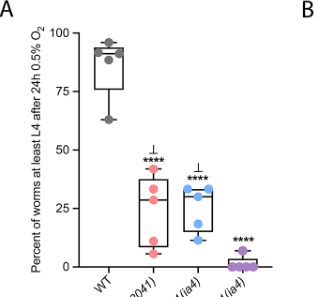

NHR-49 is an orphan nuclear hormone receptor of the HNF4 family that serves as a central transcriptional regulator of lipid metabolism in C. elegans, functionally analogous to mammalian PPARalpha. NHR-49 controls two major metabolic branches: (1) fatty acid beta-oxidation, by promoting expression of acs-2, ech-1, cpt-5, and other mitochondrial beta-oxidation genes, and (2) fatty acid desaturation, by activating delta-9 desaturases fat-5 and fat-7 (with modest effects on fat-6). NHR-49 operates through distinct heterodimeric partnerships: NHR-49/NHR-80 regulates desaturation genes, NHR-49/NHR-66 represses sphingolipid and lipid remodeling genes, and NHR-49/NHR-13 also contributes to desaturase regulation. NHR-49 also interacts with the Mediator subunit MDT-15 as a transcriptional coactivator. Loss of nhr-49 causes dramatically shortened lifespan (~41% reduction), increased fat storage, and altered fatty acid composition with elevated stearic-to-oleic acid ratio. NHR-49 is required for LIPL-4/LBP-8-mediated longevity signaling (acting as a cofactor with NHR-80, which is the direct OEA receptor), for germline-loss-mediated longevity (where it is transcriptionally upregulated by DAF-16 and TCER-1), and for hypoxia adaptation in parallel with HIF-1. NHR-49 also participates in transgenerational epigenetic inheritance of lipid accumulation from high-fat diet, functioning as an executor but not a transmitter of heritable memory. NHR-49 is expressed broadly in somatic tissues including intestine, neurons, hypodermis, and muscle, localizing to both nucleus and cytoplasm. It is an orphan receptor with no confirmed endogenous ligand; NHR-49 does not bind oleoylethanolamide (OEA), unlike its partner NHR-80.
| GO Term | Evidence | Action | Reason |
|---|---|---|---|
|
GO:0005634
nucleus
|
IBA
GO_REF:0000033 |
ACCEPT |
Summary: NHR-49 is a nuclear hormone receptor with a predicted nuclear localization based on its DNA-binding domain (PROSITE-ProRule:PRU00407). Multiple experimental studies confirm nuclear localization: NHR-49::GFP is visible in nuclei of neurons, muscle, hypodermis, and intestinal cells (PMID:25474470), and nuclear localization is increased upon germline removal. The IBA annotation from phylogenetic inference is fully consistent with these experimental data.
Reason: Nuclear localization is a core feature of NHR-49 as a nuclear hormone receptor transcription factor. IDA evidence (PMID:25474470) directly confirms this IBA annotation. NHR-49::GFP localizes to nuclei in multiple somatic tissues. Falcon deep research notes NHR-49 is broadly expressed in multiple tissues including intestine and neurons.
Supporting Evidence:
PMID:25474470
NHR-49::GFP is visible in the cytoplasm and nuclei of neurons (E), muscle (F), hypodermis (G) and intestinal cells (H).
file:worm/nhr-49/nhr-49-deep-research-falcon.md
Broadly expressed in multiple tissues, including **intestine** and **neurons**
|
|
GO:0000978
RNA polymerase II cis-regulatory region sequence-specific DNA binding
|
IBA
GO_REF:0000033 |
ACCEPT |
Summary: NHR-49 contains a conserved zinc-finger DNA-binding domain (HNF4-like, InterPro IPR049636) and functions as a transcription factor that activates target gene promoters including acs-2, fat-5, fat-7, and fmo-2 (PMID:15719061, PMID:22511885, PMID:35285794). The IBA annotation from phylogenetic inference is consistent with NHR-49 being a nuclear receptor that binds DNA in a sequence-specific manner, although direct cis-regulatory binding assays (e.g., ChIP) have not been published specifically for NHR-49.
Reason: NHR-49 has a well-characterized zinc-finger DNA-binding domain and controls transcription of specific target genes. The IBA annotation is phylogenetically sound for this HNF4 family member. It is reasonable that NHR-49 binds cis-regulatory regions of its target gene promoters to achieve the highly specific transcriptional effects documented across multiple studies. Falcon deep research describes NHR-49 as a sequence-specific transcription factor that both activates and represses metabolic gene programs.
Supporting Evidence:
PMID:15719061
Our screen revealed that deletion of nhr-49 significantly altered the expression of 13 genes, including six genes predicted to be involved in fatty acid β-oxidation, three genes involved in fatty acid desaturation
PMID:22511885
We show that NHR-49 regulates distinct subsets of its target genes by partnering with at least two other distinct nuclear receptors
file:worm/nhr-49/nhr-49-deep-research-falcon.md
NHR-49 acts as a **transcriptional regulator** that can both **activate** and **repress** metabolic gene programs
|
|
GO:0004879
nuclear receptor activity
|
IBA
GO_REF:0000033 |
ACCEPT |
Summary: NHR-49 is an established member of the nuclear hormone receptor family, containing both a zinc-finger DNA-binding domain and a ligand-binding domain (NR LBD, PROSITE PRU01189). It is classified as an orphan nuclear receptor, as no endogenous ligand has been confirmed (PMID:25554789 showed NHR-49 does not bind OEA). NHR-49 functions as a ligand-independent or orphan transcription factor that regulates lipid metabolism genes (PMID:15719061, PMID:22511885).
Reason: Nuclear receptor activity is a core molecular function of NHR-49. It has the characteristic NHR domain architecture (DBD + LBD) and functions as a transcriptional regulator through DNA binding and partner interactions. The IBA annotation accurately captures this fundamental function. Falcon deep research independently confirms NHR-49 as a sequence-specific nuclear receptor transcription factor functionally comparable to mammalian PPARalpha and HNF4alpha, and notes that despite a functionally important ligand-binding domain, no definitive endogenous ligand is established (orphan receptor).
Supporting Evidence:
PMID:15719061
deletion of the Caenorhabditis elegans NHR gene nhr-49 yielded worms with elevated fat content and shortened life span
PMID:25554789
no binding was detected between NHR-49 and OEA or OEA analogue
file:worm/nhr-49/nhr-49-deep-research-falcon.md
NHR-49 is a sequence-specific transcription factor of the nuclear receptor superfamily
file:worm/nhr-49/nhr-49-deep-research-falcon.md
a definitive endogenous ligand for NHR-49 is not established
|
|
GO:0006357
regulation of transcription by RNA polymerase II
|
IBA
GO_REF:0000033 |
ACCEPT |
Summary: NHR-49 is a transcription factor that regulates expression of numerous target genes involved in fatty acid beta-oxidation and desaturation (PMID:15719061), sphingolipid processing (PMID:22511885), hypoxia response (PMID:35285794), and autophagy genes. It works with the Mediator subunit MDT-15 as a transcriptional coactivator (PMID:16651656), placing it squarely in the Pol II transcription regulatory machinery.
Reason: Regulation of Pol II transcription is a core biological process for NHR-49. Multiple studies demonstrate its role in activating and repressing transcription of specific gene sets through partnerships with other NHRs and with the Mediator complex. The IBA annotation is well supported. Falcon deep research reinforces the central role of MDT-15 (Mediator subunit) as a critical co-regulator across NHR-49 transcriptional outputs in both metabolism and stress programs.
Supporting Evidence:
PMID:16651656
we report the identification of MDT-15, a subunit of the C. elegans Mediator complex, as an NHR-49-interacting protein and transcriptional coactivator
PMID:15719061
nhr-49 is extensively involved in the control of fatty acid metabolism, with a pronounced role in the promotion of mitochondrial β-oxidation and fatty acid desaturation
file:worm/nhr-49/nhr-49-deep-research-falcon.md
MDT-15 (Mediator subunit)** as a critical co-regulator for NHR-49-driven transcriptional outputs
|
|
GO:0030154
cell differentiation
|
IBA
GO_REF:0000033 |
MARK AS OVER ANNOTATED |
Summary: There is no direct experimental evidence that NHR-49 plays a role in cell differentiation in C. elegans. The original Van Gilst 2005 study explicitly noted that nhr-49 deletion did not noticeably affect development or fertility (PMID:15719061). NHR-49 is primarily a metabolic regulator. The IBA annotation may reflect a conserved role in HNF4 family members in vertebrates (where HNF4alpha has roles in liver and intestinal differentiation), but this function has not been demonstrated for nhr-49 in C. elegans.
Reason: While HNF4 family members in vertebrates play roles in cell differentiation, NHR-49 in C. elegans is characterized as a metabolic regulator with no documented role in cell differentiation. Loss of nhr-49 does not affect development or fertility (PMID:15719061). This IBA annotation likely over-extrapolates from vertebrate HNF4 functions that are not conserved in the nematode lineage. Falcon deep research consistently characterizes NHR-49 as a metabolic and stress-resilience regulator with no documented role in cell differentiation, supporting this over-annotation call.
Supporting Evidence:
PMID:15719061
Although nhr-49 deletion did not noticeably affect development or fertility, nhr-49(nr2041) worms experienced rapid decline in function beginning around day 3 of adulthood
file:worm/nhr-49/nhr-49-deep-research-falcon.md
NHR-49 coordinates transcriptional programs that balance lipid catabolism
|
|
GO:0000978
RNA polymerase II cis-regulatory region sequence-specific DNA binding
|
IEA
GO_REF:0000002 |
ACCEPT |
Summary: This IEA annotation from InterPro domain mapping duplicates the IBA annotation for the same term. NHR-49 contains a HNF4-like DNA-binding domain (InterPro IPR049636) and a nuclear receptor zinc finger (IPR001628), consistent with sequence-specific DNA binding at Pol II cis-regulatory regions.
Reason: The InterPro-based IEA annotation is consistent with NHR-49 domain architecture and its demonstrated function as a transcription factor. It is broader than the IBA annotation for the same term, but both are acceptable annotations for the same GO term from different evidence sources.
Supporting Evidence:
PMID:15719061
Our screen revealed that deletion of nhr-49 significantly altered the expression of 13 genes, including six genes predicted to be involved in fatty acid β-oxidation, three genes involved in fatty acid desaturation
|
|
GO:0003700
DNA-binding transcription factor activity
|
IEA
GO_REF:0000002 |
ACCEPT |
Summary: NHR-49 is a well-established DNA-binding transcription factor that regulates expression of multiple target genes. However, the more specific term GO:0004879 (nuclear receptor activity) is already annotated via IBA and better captures the molecular function. This broader IEA term is not wrong but is less informative than the more specific nuclear receptor activity annotation.
Reason: While GO:0004879 (nuclear receptor activity) is more specific and already annotated, this broader IEA annotation from InterPro is not incorrect. It is acceptable to retain both a broader IEA and a more specific IBA annotation for the same gene.
Supporting Evidence:
PMID:15719061
nhr-49 is extensively involved in the control of fatty acid metabolism, with a pronounced role in the promotion of mitochondrial β-oxidation and fatty acid desaturation
|
|
GO:0005634
nucleus
|
IEA
GO_REF:0000044 |
ACCEPT |
Summary: This IEA annotation from UniProt subcellular location mapping is consistent with NHR-49 nuclear localization confirmed by IDA evidence (PMID:25474470) and IBA. UniProt lists nuclear localization based on PROSITE-ProRule:PRU00407.
Reason: The IEA annotation is correct and supported by multiple lines of experimental evidence for nuclear localization. It duplicates the IBA and IDA annotations for the same term but from a different evidence source, which is acceptable.
Supporting Evidence:
PMID:25474470
NHR-49::GFP is visible in the cytoplasm and nuclei of neurons (E), muscle (F), hypodermis (G) and intestinal cells (H).
|
|
GO:0006355
regulation of DNA-templated transcription
|
IEA
GO_REF:0000002 |
ACCEPT |
Summary: This IEA annotation is a broader parent term of GO:0006357 (regulation of transcription by RNA polymerase II), which is annotated via IBA. NHR-49 clearly regulates DNA-templated transcription of numerous target genes (PMID:15719061, PMID:22511885, PMID:16651656).
Reason: The annotation is correct. While it is broader than the IBA annotation for Pol II-specific regulation, it is not incorrect to retain both. NHR-49 is fundamentally a transcriptional regulator.
Supporting Evidence:
PMID:15719061
Our screen revealed that deletion of nhr-49 significantly altered the expression of 13 genes
|
|
GO:0008270
zinc ion binding
|
IEA
GO_REF:0000002 |
ACCEPT |
Summary: NHR-49 contains two NR C4-type zinc finger motifs (residues 11-31 and 47-71) within its DNA-binding domain, as annotated in UniProt based on PROSITE-ProRule:PRU00407. Zinc coordination is essential for the structural integrity of the nuclear receptor DNA-binding domain.
Reason: The zinc ion binding annotation is correct based on the well-characterized C4-type zinc finger motifs in the NHR-49 DNA-binding domain. This is a structural feature inherent to all nuclear hormone receptors.
Supporting Evidence:
PMID:15719061
nhr-49(nr2041), which harbors a deletion in the nhr-49 gene encompassing part of the DNA binding domain and more than half of the ligand binding domain
|
|
GO:0030522
intracellular receptor signaling pathway
|
IEA
GO_REF:0000108 |
ACCEPT |
Summary: NHR-49 is an intracellular (nuclear) receptor that transduces signals by regulating transcription. Although it is an orphan receptor with no confirmed endogenous ligand, NHR-49 functions as a cofactor with NHR-80 in the LIPL-4/LBP-8/OEA lysosome-to-nucleus signaling pathway (PMID:25554789) and responds to germline signals via DAF-16/TCER-1 upregulation (PMID:25474470). The annotation derived from logical inference based on the nuclear receptor activity annotation is reasonable.
Reason: NHR-49 participates in intracellular receptor signaling as a nuclear receptor transcription factor. Even though it is orphan (no direct ligand), it functions within signaling pathways that regulate its activity and target gene expression. The IEA annotation from logical inference is appropriate. Falcon deep research reaffirms NHR-49 as an orphan nuclear receptor whose ligand-binding domain is functionally important but for which no definitive endogenous ligand is established.
Supporting Evidence:
PMID:25554789
Nuclear hormone receptors nhr-49 and nhr-80, previously demonstrated to physically interact (10), were both required for lipl-4–and lbp-8–mediated longevity
PMID:25474470
NHR-49 is transcriptionally up-regulated by DAF-16 and TCER-1 in the soma upon germline removal
file:worm/nhr-49/nhr-49-deep-research-falcon.md
a definitive endogenous ligand for NHR-49 is not established
|
|
GO:0043565
sequence-specific DNA binding
|
IEA
GO_REF:0000002 |
ACCEPT |
Summary: NHR-49 contains a conserved HNF4-like DNA-binding domain with two C4-type zinc fingers. This IEA annotation is a parent of the more specific GO:0000978 (RNA polymerase II cis-regulatory region sequence-specific DNA binding) already annotated. It is correct but less specific.
Reason: The annotation is correct. NHR-49 binds DNA in a sequence-specific manner through its zinc finger DNA-binding domain. While more specific annotations exist, the IEA from InterPro is not incorrect.
Supporting Evidence:
PMID:15719061
nhr-49 is extensively involved in the control of fatty acid metabolism, with a pronounced role in the promotion of mitochondrial β-oxidation and fatty acid desaturation
|
|
GO:0005515
protein binding
|
IPI
PMID:14704431 A map of the interactome network of the metazoan C. elegans. |
MODIFY |
Summary: PMID:14704431 (Li et al. 2004) reports a high-throughput yeast two-hybrid interactome mapping study for C. elegans. NHR-49 was identified as an interactor in this screen. However, the generic term protein binding is uninformative. From subsequent focused studies, NHR-49 has been shown to physically interact with specific partners including NHR-80, NHR-66, NHR-13, and MDT-15 (PMID:22511885, PMID:16651656). A more specific term such as DNA-binding transcription factor binding (GO:0140297) would be more appropriate.
Reason: Protein binding is too vague for NHR-49, whose protein interactions are well characterized. The high-throughput Y2H screen identified interactions that are better captured by more specific terms. NHR-49 interacts with other transcription factors (NHR-80, NHR-66, NHR-13) and the Mediator coactivator MDT-15. GO:0140297 (DNA-binding transcription factor binding) better describes these interactions.
Proposed replacements:
DNA-binding transcription factor binding
Supporting Evidence:
PMID:22511885
We show that NHR-49 regulates distinct subsets of its target genes by partnering with at least two other distinct nuclear receptors
PMID:16651656
we report the identification of MDT-15, a subunit of the C. elegans Mediator complex, as an NHR-49-interacting protein and transcriptional coactivator
|
|
GO:0005515
protein binding
|
IPI
PMID:16651656 A Mediator subunit, MDT-15, integrates regulation of fatty a... |
MODIFY |
Summary: PMID:16651656 (Taubert et al. 2006) identified MDT-15, a Mediator subunit, as a physical interacting partner and transcriptional coactivator of NHR-49. The interaction was shown through yeast two-hybrid and functional studies. The generic protein binding term fails to capture this specific and functionally important interaction with the Mediator complex.
Reason: The interaction between NHR-49 and MDT-15 (Mediator subunit) represents a transcription factor-coactivator interaction. GO:0140297 (DNA-binding transcription factor binding) is more appropriate, as MDT-15 is itself a transcriptional coregulator.
Proposed replacements:
DNA-binding transcription factor binding
Supporting Evidence:
PMID:16651656
we report the identification of MDT-15, a subunit of the C. elegans Mediator complex, as an NHR-49-interacting protein and transcriptional coactivator. Knockdown of mdt-15 by RNA interference (RNAi) prevented fasting-induced mRNA accumulation of NHR-49 targets in vivo
|
|
GO:0005515
protein binding
|
IPI
PMID:19123269 Empirically controlled mapping of the Caenorhabditis elegans... |
MODIFY |
Summary: PMID:19123269 (Simonis et al. 2009) is a high-throughput yeast two-hybrid interactome mapping study that provides expanded coverage of C. elegans protein-protein interactions. Similar to PMID:14704431, the generic protein binding term is uninformative for NHR-49, whose specific interaction partners are well characterized.
Reason: As with the other protein binding annotations, a more specific term is warranted. NHR-49 interacts with other NHRs and the Mediator complex. GO:0140297 (DNA-binding transcription factor binding) better describes the interactions detected.
Proposed replacements:
DNA-binding transcription factor binding
Supporting Evidence:
PMID:22511885
We show that NHR-49 regulates distinct subsets of its target genes by partnering with at least two other distinct nuclear receptors
|
|
GO:0005515
protein binding
|
IPI
PMID:23791784 Extensive rewiring and complex evolutionary dynamics in a C.... |
MODIFY |
Summary: PMID:23791784 (Reece-Hoyes et al. 2013) characterized transcription factor network rewiring in C. elegans through systematic Y2H and other interaction assays. The study found that even highly similar TFs often have different interaction partners. For NHR-49, this provides network context but the generic protein binding annotation is too vague.
Reason: The protein binding term is too generic for NHR-49. The interactions detected in this TF network study are primarily TF-TF interactions. GO:0140297 (DNA-binding transcription factor binding) is more specific and appropriate.
Proposed replacements:
DNA-binding transcription factor binding
Supporting Evidence:
PMID:23791784
we comprehensively characterize such network rewiring for C. elegans transcription factors (TFs) within and across four newly delineated molecular networks
|
|
GO:0140297
DNA-binding transcription factor binding
|
IPI
PMID:22511885 Coordinate regulation of lipid metabolism by novel nuclear r... |
ACCEPT |
Summary: PMID:22511885 (Pathare et al. 2012) demonstrated that NHR-49 physically interacts with multiple nuclear hormone receptors including NHR-80, NHR-66, NHR-13, NHR-22, NHR-79, NHR-105, and NHR-256, forming both homodimers and heterodimers. Direct physical interactions were confirmed for NHR-49/NHR-80 and NHR-49/NHR-66 by yeast two-hybrid and functional studies. This term accurately captures NHR-49 binding to other DNA-binding transcription factors.
Reason: This annotation accurately describes the well-characterized physical interactions between NHR-49 and other NHRs (NHR-80, NHR-66, NHR-13). The term is specific and informative, directly supported by the referenced study. Falcon deep research independently summarizes the context-dependent NHR partnerships (NHR-80 for desaturase genes, NHR-66 for sphingolipid/lipid remodeling genes).
Supporting Evidence:
PMID:22511885
We show that NHR-49 regulates distinct subsets of its target genes by partnering with at least two other distinct nuclear receptors
PMID:22511885
Gene expression profiles suggest that NHR-49 partners with NHR-66 to regulate sphingolipid and lipid remodeling genes and with NHR-80 to regulate genes involved in fatty acid desaturation
file:worm/nhr-49/nhr-49-deep-research-falcon.md
NHR-49 was shown to regulate distinct gene subsets via **partnerships with other NHRs**
file:worm/nhr-49/nhr-49-deep-research-falcon.md
**NHR-80**: linked to regulation of **fatty-acid desaturase** genes.
|
|
GO:0045944
positive regulation of transcription by RNA polymerase II
|
IMP
PMID:24854345 PKG and NHR-49 signalling co-ordinately regulate short-term ... |
ACCEPT |
Summary: PMID:24854345 (Huang et al. 2014) showed that NHR-49 acts in the intestine during short-term fasting to regulate lysosomal lipid accumulation, coordinating with PKG/EGL-4 signaling. NHR-49 activates expression of IPLA-2 and other hydrolases in response to fasting. The positive regulation of transcription annotation is consistent with NHR-49 activating target gene expression in this context.
Reason: NHR-49 positively regulates transcription of target genes including acs-2, fat-5, fat-7, fmo-2, and genes involved in fasting responses. The IMP evidence from the fasting study supports this annotation, though the annotation captures a general function rather than the specific fasting context.
Supporting Evidence:
PMID:24854345
NHR-49 acts in intestine to inhibit lipids accumulation via activation of IPLA-2
|
|
GO:0008340
determination of adult lifespan
|
IGI
PMID:24107417 TAF-4 is required for the life extension of isp-1, clk-1 and... |
ACCEPT |
Summary: PMID:24107417 (Khan et al. 2013) identified NHR-49 among transcription factors whose RNAi knockdown affected development, stress response, or fecundity of isp-1 mitochondrial (Mit) mutants. The study examined lifespan in Mit mutants. NHR-49 is listed alongside HIF-1 and other TFs that affect Mit mutant lifespan. This is consistent with NHR-49 having a role in lifespan determination, particularly in the context of mitochondrial function.
Reason: NHR-49 has a well-established role in determination of adult lifespan. Loss of nhr-49 causes ~41% reduction in lifespan (PMID:15719061, PMID:16839188), and it is required for longevity mediated by germline loss (PMID:25474470) and LIPL-4 signaling (PMID:25554789). The IGI evidence from the Mit mutant context adds another dimension to this core function.
Supporting Evidence:
PMID:24107417
Seven of these transcription factors--AHA-1, CEH-18, HIF-1, JUN-1, NHR-27, NHR-49 and the CREB homolog-1 (CRH-1)-interacting protein TAF-4--were also essential for isp-1 life extension.
PMID:15719061
nhr-49(nr2041) worms lived only 6–8 d as adults, significantly shorter than the 15 to 18-d life span of N2 wild-type (WT) animals
|
|
GO:0005634
nucleus
|
IDA
PMID:25474470 Germline signals deploy NHR-49 to modulate fatty-acid β-oxid... |
ACCEPT |
Summary: PMID:25474470 (Ratnappan et al. 2014) directly demonstrated NHR-49::GFP localization to both nuclei and cytoplasm in adult somatic tissues, with highest expression in intestinal cells. Nuclear localization was especially prominent upon germline removal.
Reason: Direct experimental evidence using NHR-49::GFP fusion protein confirms nuclear localization in multiple tissues. This is a core annotation for a nuclear hormone receptor.
Supporting Evidence:
PMID:25474470
In adults, it was visible in all somatic tissues (Fig
|
|
GO:0005737
cytoplasm
|
IDA
PMID:25474470 Germline signals deploy NHR-49 to modulate fatty-acid β-oxid... |
ACCEPT |
Summary: PMID:25474470 (Ratnappan et al. 2014) showed NHR-49::GFP localization to both nuclei and cytoplasm in adult somatic tissues. Cytoplasmic localization was evident alongside nuclear localization in neurons, muscle, hypodermis, and intestinal cells.
Reason: Direct experimental evidence confirms cytoplasmic localization of NHR-49. This likely reflects the dynamic shuttling of nuclear receptors between cytoplasm and nucleus. The dual localization is common for nuclear hormone receptors.
Supporting Evidence:
PMID:25474470
In adults, it was visible in all somatic tissues (Fig
|
|
GO:0005634
nucleus
|
HDA
PMID:21611156 Determining the sub-cellular localization of proteins within... |
ACCEPT |
Summary: PMID:21611156 (Meissner et al. 2011) is a high-throughput localizome study determining sub-cellular localization of proteins within C. elegans body wall muscle using GFP tagging. NHR-49 was localized to the nucleus in this study. While this is body wall muscle-specific data, it is consistent with the broader expression and localization data from PMID:25474470.
Reason: The HDA evidence from the muscle localizome study confirms nuclear localization and is consistent with the IDA evidence from PMID:25474470 and the predicted nuclear localization from domain analysis.
Supporting Evidence:
PMID:21611156
we have analyzed the expression of about 227 GFP-tagged proteins that show localized expression in the body wall muscle of this nematode
|
|
GO:0008340
determination of adult lifespan
|
IMP
PMID:15719061 Nuclear hormone receptor NHR-49 controls fat consumption and... |
ACCEPT |
Summary: PMID:15719061 (Van Gilst et al. 2005) is the seminal study characterizing NHR-49 function. It demonstrated that nhr-49(nr2041) deletion mutants have dramatically shortened lifespan (6-8 days vs. 15-18 days for wild type at 23C), representing approximately 41% reduction in adult lifespan. The authors showed a striking correlation between fatty acid desaturase activity (stearic/oleic acid ratio) and lifespan, suggesting the shortened lifespan results at least in part from impaired fat-7 expression.
Reason: Determination of adult lifespan is a core phenotype of nhr-49 loss of function. The ~41% reduction in lifespan is one of the most dramatic effects reported for nhr-49 mutants and has been replicated across multiple studies. Falcon deep research lists shortened lifespan among the core loss-of-function phenotypes of nhr-49.
Supporting Evidence:
PMID:15719061
nhr-49(nr2041) worms lived only 6–8 d as adults, significantly shorter than the 15 to 18-d life span of N2 wild-type (WT) animals
PMID:15719061
nhr-49 function is not required for development or fertility, but is clearly essential for normal longevity
file:worm/nhr-49/nhr-49-deep-research-falcon.md
Loss of **nhr-49** causes high fat, impaired fasting response, shortened lifespan, altered mitochondrial morphology and function, defective pathogen avoidance, and increased sensitivity to oxidative stress, hypoxia, and infection
|
|
GO:0019217
regulation of fatty acid metabolic process
|
IMP
PMID:15719061 Nuclear hormone receptor NHR-49 controls fat consumption and... |
ACCEPT |
Summary: PMID:15719061 (Van Gilst et al. 2005) comprehensively demonstrated that NHR-49 regulates expression of 13 fatty acid metabolism genes, including six in beta-oxidation (acs-2, ech-1, F09F3.9), three delta-9 desaturases (fat-5, fat-7, and to a lesser extent fat-6), and genes in fatty acid binding/transport and the glyoxylate pathway. Loss of nhr-49 results in increased fat storage and altered fatty acid composition with elevated stearic-to-oleic acid ratio.
Reason: Regulation of fatty acid metabolism is the most central function of NHR-49. The evidence from PMID:15719061 is comprehensive, showing effects on both beta-oxidation and desaturation pathways, with measurable changes in fat storage and fatty acid composition. Falcon deep research confirms the central role of NHR-49 in activating beta-oxidation targets (acs-2, cpt-5, ech-1) and desaturase genes (fat-5, fat-6, fat-7).
Supporting Evidence:
PMID:15719061
Our screen revealed that deletion of nhr-49 significantly altered the expression of 13 genes, including six genes predicted to be involved in fatty acid β-oxidation, three genes involved in fatty acid desaturation
PMID:15719061
nhr-49(nr2041) animals stained more brightly with Nile Red than did WT worms
file:worm/nhr-49/nhr-49-deep-research-falcon.md
It activates gene modules involved in **fatty-acid β-oxidation** (including canonical targets such as **acs-2, cpt-5, ech-1**) and regulates **fatty-acid desaturation** genes (**fat-5, fat-6, fat-7**)
|
|
GO:0045944
positive regulation of transcription by RNA polymerase II
|
IMP
PMID:15719061 Nuclear hormone receptor NHR-49 controls fat consumption and... |
ACCEPT |
Summary: PMID:15719061 (Van Gilst et al. 2005) showed that NHR-49 promotes transcription of target genes including acs-2, fat-5, fat-7, and ech-1. Expression of these genes was dramatically reduced (>30-fold for fat-5 and fat-7) in nhr-49 deletion mutants. NHR-49 also works with Mediator subunit MDT-15 for transcriptional activation (PMID:16651656).
Reason: Positive regulation of Pol II transcription is a core molecular function of NHR-49 as a transcription factor that activates expression of fatty acid metabolism genes. The evidence is strong and direct.
Supporting Evidence:
PMID:15719061
fat-5 (W06D12.3) and fat-7 (F10D2.9) expression was dramatically lowered in nhr-49(nr2041) worms (>30-fold) in all four larval stages
PMID:16651656
Knockdown of mdt-15 by RNA interference (RNAi) prevented fasting-induced mRNA accumulation of NHR-49 targets in vivo
|
|
GO:0008340
determination of adult lifespan
|
IMP
PMID:16839188 Genetic regulation of unsaturated fatty acid composition in ... |
ACCEPT |
Summary: PMID:16839188 (Brock et al. 2006) characterized nhr-80 and delta-9 desaturase mutants, with nhr-49 as a comparison. The study confirmed that nhr-49 mutants have a 41% reduction in mean lifespan (8.2 days vs 13.9 days at 25C) and importantly showed that nhr-80 mutants, despite similar fatty acid composition changes, have only a modest ~10% lifespan reduction. This demonstrates that the short lifespan of nhr-49 is not solely due to desaturase deficiency but involves additional metabolic functions (e.g., beta-oxidation).
Reason: This provides independent replication of the nhr-49 lifespan phenotype and adds the important insight that the lifespan effect is not solely attributable to desaturase regulation. Determination of adult lifespan is a core function of nhr-49.
Supporting Evidence:
PMID:16839188
These data indicate a 10% decrease in mean lifespan between wild type and nhr-80 mutants, the difference between wild type and nhr-49 mutants is much greater with a 41% reduction in mean lifespan.
|
|
GO:0019216
regulation of lipid metabolic process
|
IMP
PMID:16839188 Genetic regulation of unsaturated fatty acid composition in ... |
ACCEPT |
Summary: PMID:16839188 (Brock et al. 2006) confirmed that nhr-49 mutants have altered fatty acid composition similar to nhr-80 mutants (elevated 18:0/18:1 ratio), but additionally showed increased fat storage not seen in nhr-80 mutants. NHR-49 regulates both desaturation (via fat-5, fat-7) and beta-oxidation pathways, having broader lipid regulatory functions than NHR-80 alone.
Reason: Regulation of lipid metabolism is a core function of NHR-49. While GO:0019217 (regulation of fatty acid metabolic process) from PMID:15719061 is more specific, this broader term also captures NHR-49 roles in sphingolipid processing and lipid remodeling (PMID:22511885) that go beyond fatty acid metabolism. Falcon deep research describes NHR-49 as coordinating transcriptional programs that balance lipid catabolism, fatty-acid desaturation, and lipid remodeling, including NHR-66-dependent sphingolipid/lipid remodeling programs.
Supporting Evidence:
PMID:16839188
The nhr-49 mutants have increased levels of the saturated fatty acid 18:0, higher fat accumulation, and a shorter lifespan than wild-type animals
PMID:22511885
We show that NHR-49 regulates distinct subsets of its target genes by partnering with at least two other distinct nuclear receptors
file:worm/nhr-49/nhr-49-deep-research-falcon.md
**NHR-66**: linked to regulation of **sphingolipid/lipid remodeling** genes.
|
|
GO:0071456
cellular response to hypoxia
|
IMP
PMID:35285794 Nuclear hormone receptor NHR-49 acts in parallel with HIF-1 ... |
NEW |
Summary: PMID:35285794 (Doering et al. 2022) demonstrated that NHR-49 acts in parallel with HIF-1 to promote hypoxia adaptation. Under 0.5% oxygen, NHR-49 activates expression of acs-2, fmo-2, and autophagy-related genes. Loss of nhr-49 reduces embryonic hypoxia survival from 86% to 25%. Combined loss of nhr-49 and hif-1 is nearly lethal under hypoxia (<2% survival). NHR-49 acts in multiple somatic tissues including intestine, head neurons, and hypodermal seam cells.
Reason: This annotation captures the well-documented role of NHR-49 in hypoxia adaptation, which is a distinct biological function from its lipid metabolism role. The evidence from Doering et al. 2022 is strong with clear survival phenotypes and target gene identification. Falcon deep research highlights this as an essential hypoxia survival pathway acting in parallel to HIF-1, with NHR-49 required for hypoxia-induced autophagosome (LGG-1::GFP) formation in seam cells.
Supporting Evidence:
PMID:35285794
nhr-49 is not only required to induce fmo-2, but controls a broad transcriptional response to hypoxia
file:worm/nhr-49/nhr-49-deep-research-falcon.md
an **essential hypoxia survival pathway** controlled by NHR-49 that operates **in parallel to HIF-1**
file:worm/nhr-49/nhr-49-deep-research-falcon.md
NHR-49 being required for hypoxia-induced autophagosome formation (LGG-1::GFP foci) in seam cells
|
The research report should be a detailed narrative explaining the function, biological processes, and localization of the gene product. Citations should be given for all claims.
You should prioritize authoritative reviews and primary scientific literature when conducting research. You can supplement
this with annotations you find in gene/protein databases, but these can be outdated or inaccurate.
We are specifically interested in the primary function of the gene - for enzymes, what reaction is catalyzed, and what is the substrate specificity? For transporters, what is the substrate? For structural proteins or adapters, what is the broader structural role? For signaling molecules, what is the role in the pathway.
We are interested in where in or outside the cell the gene product carries out its function.
We are also interested in the signaling or biochemical pathways in which the gene functions. We are less interested in broad pleiotropic effects, except where these elucidate the precise role.
Include evidence where possible. We are interested in both experimental evidence as well as inference from structure, evolution, or bioinformatic analysis. Precise studies should be prioritized over high-throughput, where available.
The target described in UniProt (O45666) is NHR-49, encoded by nhr-49 (ORF K10C3.6) in Caenorhabditis elegans, and belongs to the nuclear hormone receptor (NHR) family with canonical DNA-binding and ligand-binding domains typical of HNF4/NR2-related receptors. The literature extracted here consistently refers to the C. elegans nuclear hormone receptor NHR-49 with HNF4/PPARα-like roles in lipid metabolism and stress physiology, matching the UniProt-provided identity and domains (Frontiers review 2023-08-14; https://doi.org/10.3389/fphys.2023.1241591) (doering2023nuclearhormonereceptor pages 1-2).
NHR-49 is a sequence-specific transcription factor of the nuclear receptor superfamily. It is widely described as functionally comparable to mammalian lipid-sensing nuclear receptors, especially PPARα (functional analogy) and HNF4α (structural similarity), and is among the best-characterized C. elegans NHRs (review published 2023-08-14; https://doi.org/10.3389/fphys.2023.1241591) (doering2023nuclearhormonereceptor pages 1-2).
Across primary and review sources, the central mechanistic theme is that NHR-49 coordinates transcriptional programs that balance lipid catabolism (β-oxidation), fatty-acid desaturation, lipid remodeling, and stress-protective responses (doering2023nuclearhormonereceptor pages 1-2, pathare2012coordinateregulationof pages 2-3).
A key concept for NHR-49 annotation is context-dependent partnering. In a major genetics study (PLOS Genetics, 2012-04; https://doi.org/10.1371/journal.pgen.1002645), NHR-49 was shown to regulate distinct gene subsets via partnerships with other NHRs, notably:
- NHR-80: linked to regulation of fatty-acid desaturase genes.
- NHR-66: linked to regulation of sphingolipid/lipid remodeling genes.
The same study used NHR-49’s ligand-binding domain (LBD) as bait in yeast two-hybrid screens and reported recovery of multiple candidate interacting factors (pathare2012coordinateregulationof pages 2-3, pathare2012coordinateregulationof pages 14-15).
Primary function: NHR-49 acts as a transcriptional regulator that can both activate and repress metabolic gene programs.
- It activates gene modules involved in fatty-acid β-oxidation (including canonical targets such as acs-2, cpt-5, ech-1) and regulates fatty-acid desaturation genes (fat-5, fat-6, fat-7) (pathare2012coordinateregulationof pages 2-3).
- It is also implicated in stress-protective transcription, including oxidative-stress detoxification programs and regulation of detox genes (e.g., gst-4 in stress contexts) (G3, 2018-12; https://doi.org/10.1534/g3.118.200727) (hu2018thecaenorhabditiselegans pages 1-5).
Coactivator dependence: Multiple studies converge on MDT-15 (Mediator subunit) as a critical co-regulator for NHR-49-driven transcriptional outputs in metabolism and stress programs (hu2018thecaenorhabditiselegans pages 1-5, sala2024nuclearreceptorsignaling pages 1-2).
Evidence strongly supports that the LBD is functionally important and likely ligand-responsive, but a definitive endogenous ligand for NHR-49 is not established.
- Gain-of-function missense mutations in the LBD (PLoS ONE, 2016-09-12; https://doi.org/10.1371/journal.pone.0162708) broadly increase NHR-49-regulated gene expression; structural modeling in that paper supports potential interaction with small molecules (lee2016gainoffunctionallelesin pages 1-2).
- A 2024 PLOS Biology paper proposes that palmitic acid functions as a ligand activating “NHR-49/80” to trigger early development under starvation, but the excerpted evidence notes that direct binding was not conclusively verified (kwon2024regulatoroflipid pages 9-11).
Taken together: ligand regulation is plausible and an active area, but functional annotation should phrase ligands as “putative/proposed” unless binding is directly shown.
The most consistent localization evidence is functional, tissue-specific rescue and transgenic expression.
- Neurons (cell-autonomous behavior control): A 2024 Cells paper (2024-06; https://doi.org/10.3390/cells13110978) shows NHR-49 function in specific oxygen-sensing body cavity neurons (URX, AQR, PQR) is sufficient to restore pathogen avoidance behaviors and normalize neuronal calcium kinetics (kwon2024regulatoroflipid pages 1-2, kwon2024regulatoroflipid pages 9-11).
- Intestine (metabolic and proteostasis programs): A 2024 Genes & Development study (2024-05; https://doi.org/10.1101/gad.351829.124) uses intestinal promoters (e.g., gly-19p::nhr-49::gfp) and shows that intestinal NHR-49 activation improves proteostasis outcomes (sala2024nuclearreceptorsignaling pages 7-8).
- Multi-tissue rescue in hypoxia adaptation: eLife 2022 includes tissue-specific constructs (intestine, hypodermis, neurons, muscle) in defining an essential NHR-49 hypoxia pathway (2022-03; https://doi.org/10.7554/elife.67911) (doering2022nuclearhormonereceptor pages 8-11).
In the canonical model, NHR-49 drives expression of fatty-acid utilization genes, including acs-2, cpt-5, ech-1, linking it to β-oxidation and lipid consumption pathways (pathare2012coordinateregulationof pages 2-3).
NHR-49 regulates Δ9-desaturase genes fat-5/fat-6/fat-7, connecting it to MUFA production and lipid composition (pathare2012coordinateregulationof pages 2-3). A 2024 neuronal study further connects altered lipid composition in nhr-49 mutants to altered neuronal activity (kwon2024regulatoroflipid pages 9-11).
Pathare et al. (2012-04; https://doi.org/10.1371/journal.pgen.1002645) is central evidence that NHR-49’s downstream outputs partition into distinct modules depending on partner receptor context (notably NHR-66 and NHR-80), including sphingolipid/lipid remodeling genes (pathare2012coordinateregulationof pages 1-2, pathare2012coordinateregulationof pages 2-3).
NHR-49 is required for induction of detoxification programs (phase II enzymes) in oxidative stress contexts and works with MDT-15; it can also influence SKN-1 isoform expression in this context (G3, 2018-12; https://doi.org/10.1534/g3.118.200727) (hu2018thecaenorhabditiselegans pages 1-5).
A major mechanistic expansion beyond “lipid metabolism” is an essential hypoxia survival pathway controlled by NHR-49 that operates in parallel to HIF-1, with NHR-49 being required for hypoxia-induced autophagosome formation (LGG-1::GFP foci) in seam cells (eLife, 2022-03; https://doi.org/10.7554/elife.67911) (doering2022nuclearhormonereceptor pages 8-11).
A 2024 Genes & Development study places NHR-49/MDT-15 as a signaling module that links lipid metabolic remodeling to HSF-1-dependent heat shock response and proteostasis, demonstrating that NHR-49 activation can be sufficient to improve proteostasis measures (sala2024nuclearreceptorsignaling pages 1-2, sala2024nuclearreceptorsignaling pages 7-8).
A 2024 Cells paper identifies a cell-autonomous neuronal role: loss of nhr-49 causes impaired pathogen lawn avoidance (PA14) associated with prolonged URX calcium transients after O2 upshift, and neuronal rescue in URX/AQR/PQR improves both behavior and calcium kinetics. This work links lipid homeostasis and neuronal excitability and demonstrates a direct neural implementation of nhr-49 function beyond intestinal metabolism (kwon2024regulatoroflipid pages 1-2, kwon2024regulatoroflipid pages 9-11).
Doering et al. (Frontiers in Physiology, 2023-08-14; https://doi.org/10.3389/fphys.2023.1241591) consolidates NHR-49 as a hub integrating lipid metabolism with stress resilience, immunity, and healthy aging, and highlights open questions including tissue-specific outputs and upstream inputs (including ligand-like regulation) (doering2023nuclearhormonereceptor pages 1-2).
Jeong et al. (Nature Communications, 2023-01; https://doi.org/10.1038/s41467-023-35952-z) positions NHR-49 in a whole-animal signaling chain linking glucose restriction → neuronal AMPK signaling → peripheral lipid remodeling, reporting that restoration of NHR-49 in either neurons or intestine can rescue glucose-restriction longevity in an nhr-49 mutant background, consistent with non-cell-autonomous signaling (jeong2023anewampk pages 9-10).
Sala et al. (Genes & Development, 2024-05; https://doi.org/10.1101/gad.351829.124) reports a lipid–proteostasis coupling in which NHR-49/MDT-15 acts upstream of HSF-1, linking reproductive/metabolic cues to organismal stress resilience; it provides quantitative aggregate-reduction data (sala2024nuclearreceptorsignaling pages 7-8).
Kwon et al. (Cells, 2024-06; https://doi.org/10.3390/cells13110978) provides a neuron-specific implementation: NHR-49 in URX/AQR/PQR is required for normal calcium dynamics and PA14 avoidance, and dietary oleic acid can rescue deficits (kwon2024regulatoroflipid pages 1-2, kwon2024regulatoroflipid pages 9-11).
In Sala et al. (2024-05), intestinal activation of NHR-49 reduced polyglutamine aggregation: Q35::mCherry aggregates were reduced by 30% at day 5 of adulthood in an NHR-49-activated condition (sala2024nuclearreceptorsignaling pages 7-8).
Kwon et al. (2024-06) uses multiple quantitative readouts for URX calcium transients (peak amplitude, rise/decay times, AUC, repolarization durations) and reports that 300 µM oleic acid improved avoidance behavior and URX calcium kinetics; imaging trials with maximum ΔF/F0 < 300% were excluded per QC criteria (kwon2024regulatoroflipid pages 2-4, kwon2024regulatoroflipid pages 9-11).
Doering et al. (eLife, 2022-03) reports embryo-to-L4 survival after hypoxia and quantifies autophagy dependence. Example quantitative outcomes include:
- After 24 h at 0.5% O2, approximately 86% of WT embryos reached at least L4; after 48 h, approximately 44% of WT reached L4 (visual evidence in cropped figures) (doering2022nuclearhormonereceptor media de728d3f).
- Autophagy gene perturbations reduced survival, e.g. RNAi of bec-1 to 27% and atg-10 to 28% versus 79% for empty-vector control; multiple autophagy mutants fell in the 41–44% range under hypoxia (doering2022nuclearhormonereceptor pages 8-11).
These data support NHR-49 as a transcriptional regulator upstream of an autophagy module required for hypoxia tolerance (doering2022nuclearhormonereceptor pages 8-11).
Pathare et al. (2012-04) reports microarray significance thresholds used to define NHR-49-regulated genes (absolute log2 ratio ≥ 0.848 and p ≤ 0.001) (pathare2012coordinateregulationof pages 1-2).
Because NHR-49 integrates lipid metabolism with stress resilience and aging, it is widely used as:
- A genetic node to test how interventions (dietary composition, fasting, glucose restriction) reprogram metabolism and stress resistance (doering2023nuclearhormonereceptor pages 1-2, jeong2023anewampk pages 9-10).
- A tissue-specific biology model (neurons vs intestine vs hypodermis) for dissecting cell-autonomous versus systemic lipid signaling mechanisms (kwon2024regulatoroflipid pages 1-2, sala2024nuclearreceptorsignaling pages 7-8, doering2022nuclearhormonereceptor pages 8-11).
Recent primary studies show NHR-49-dependent phenotypes are modifiable by defined nutritional manipulations:
- Oleic acid supplementation (300 µM) modifies neuronal physiology and PA14 avoidance in nhr-49 mutants, operationalizing lipid supplementation as a functional test of NHR-49-linked lipid dysfunction in neurons (kwon2024regulatoroflipid pages 2-4, kwon2024regulatoroflipid pages 9-11).
- In glucose restriction models, NHR-49 sits in a chain connecting dietary inputs to membrane lipid remodeling and longevity, making it a practical target for mechanism-driven dietary/genetic perturbation experiments (jeong2023anewampk pages 9-10).
A consistent expert perspective, especially in the 2023 Frontiers review, is that NHR-49 should be annotated not merely as a “lipid metabolism regulator,” but as a systems integrator that:
1) couples lipid catabolism/desaturation programs to organismal stress-defense networks, and
2) produces tissue-specific outputs (intestinal metabolic remodeling; neuronal excitability control; hypoxia/autophagy survival) while potentially receiving upstream regulation by unknown ligand-like inputs or metabolic state signals (doering2023nuclearhormonereceptor pages 1-2).
| Category | Key findings | Best supporting sources |
|---|---|---|
| Identity/domains | nhr-49 in Caenorhabditis elegans encodes NHR-49, an HNF4-like nuclear hormone receptor transcription factor functionally compared with mammalian HNF4α and PPARα; it has canonical DNA-binding and ligand-binding domains, and GOF mutations map to the LBD. | (doering2023nuclearhormonereceptor pages 1-2, lee2016gainoffunctionallelesin pages 1-2) |
| Molecular function | Sequence-specific nuclear receptor transcription factor that both activates and represses gene programs controlling fatty-acid metabolism; required for fasting and oxidative-stress transcriptional responses and works with MDT-15. Structural modeling supports likely small-molecule interaction via the LBD, but no definitive endogenous ligand is established. | (doering2023nuclearhormonereceptor pages 1-2, lee2016gainoffunctionallelesin pages 1-2, hu2018thecaenorhabditiselegans pages 1-5) |
| Partners/cofactors | Validated partners include MDT-15 as coactivator, NHR-80 for desaturase gene activation, and NHR-66 for repressive lipid-remodeling and sphingolipid programs; NHR-13 also contributes to desaturase regulation without confirmed direct physical interaction. Yeast two-hybrid using NHR-49-LBD recovered 24 independent cDNAs from 13 genes. | (pathare2012coordinateregulationof pages 2-3, pathare2012coordinateregulationof pages 14-15) |
| Tissue/cellular localization | Broadly expressed in multiple tissues, including intestine and neurons. Cell-specific rescue places key functions in URX/AQR/PQR body-cavity neurons for pathogen avoidance and calcium control, and in intestine for proteostasis and stress programs; hypoxia studies also tested rescue in hypodermis, neurons, and muscle. GOF substitutions did not alter measured subcellular localization. | (lee2016gainoffunctionallelesin pages 1-2, kwon2024regulatoroflipid pages 1-2, sala2024nuclearreceptorsignaling pages 7-8, doering2022nuclearhormonereceptor pages 8-11) |
| Key pathways/targets | Major outputs include mitochondrial and peroxisomal β-oxidation genes acs-2, cpt-5, ech-1; fatty-acid desaturases fat-5, fat-6, fat-7; sphingolipid and lipid-remodeling genes; glyoxylate cycle gene icl-1; lipid transport genes lbp-1, lbp-8; and stress or immune genes including fmo-2 and gst-4. It also supports autophagy-linked hypoxia adaptation and neuronal lipid homeostasis. | (pathare2012coordinateregulationof pages 1-2, lee2016functionalcharacterizationof pages 22-26, pathare2012coordinateregulationof pages 2-3, hu2018thecaenorhabditiselegans pages 1-5, doering2022nuclearhormonereceptor pages 8-11) |
| Phenotypes | Loss of nhr-49 causes high fat, impaired fasting response, shortened lifespan, altered mitochondrial morphology and function, defective pathogen avoidance, and increased sensitivity to oxidative stress, hypoxia, and infection. GOF alleles are functionally distinct and can produce long-, short-, or normal-lifespan outcomes depending on allele. | (pathare2012coordinateregulationof pages 1-2, lee2016gainoffunctionallelesin pages 1-2, hu2018thecaenorhabditiselegans pages 1-5, kwon2024regulatoroflipid pages 1-2) |
| Recent 2023-2024 developments | 2023: review consolidates NHR-49 as a core stress-resilience and healthy-aging regulator; glucose-restriction longevity requires non-cell-autonomous PAQR-2/NHR-49/Δ9-desaturase signaling. 2024: NHR-49 and MDT-15 were shown to couple lipid homeostasis to HSF-1 proteostasis; neuronal NHR-49 in URX/AQR/PQR tunes calcium dynamics and PA14 avoidance; free long-chain fatty acids were proposed to activate NHR-49/80 signaling to initiate development. | (doering2023nuclearhormonereceptor pages 1-2, sala2024nuclearreceptorsignaling pages 1-2, kwon2024regulatoroflipid pages 1-2, sala2024nuclearreceptorsignaling pages 7-8, jeong2023anewampk pages 9-10) |
| Quantitative data points | Microarray cutoff: absolute log2 ratio at least 0.848 and p ≤ 0.001 for NHR-49-regulated genes. Oleic acid rescue: 300 µM OA improved avoidance and URX calcium kinetics. Calcium imaging: trials with max ΔF/F0 < 300% were excluded. Proteostasis: intestinal NHR-49 activation reduced Q35 aggregates by 30% at day 5 adulthood. Hypoxia: after 24 h at 0.5% O2, about 86% WT embryos reached L4; after 48 h, about 44% WT reached L4. Autophagy-pathway perturbations lowered hypoxia survival to 27–44% versus 79% EV control. | (pathare2012coordinateregulationof pages 1-2, kwon2024regulatoroflipid pages 2-4, kwon2024regulatoroflipid pages 9-11, sala2024nuclearreceptorsignaling pages 7-8, doering2022nuclearhormonereceptor pages 8-11, doering2022nuclearhormonereceptor media de728d3f) |
Table: This table summarizes verified identity, molecular function, pathways, localization, phenotypes, and recent 2023-2024 findings for C. elegans NHR-49/UniProt O45666. It provides a concise evidence map for functional annotation with supporting citation IDs.
Cropped figure panels supporting the quantitative hypoxia survival and autophagy-foci conclusions are available from the eLife 2022 paper (doering2022nuclearhormonereceptor media de728d3f, doering2022nuclearhormonereceptor media 16c37f01, doering2022nuclearhormonereceptor media 19a845b3).
References
(doering2023nuclearhormonereceptor pages 1-2): Kelsie R. S. Doering, Glafira Ermakova, and Stefan Taubert. Nuclear hormone receptor nhr-49 is an essential regulator of stress resilience and healthy aging in caenorhabditis elegans. Frontiers in Physiology, Aug 2023. URL: https://doi.org/10.3389/fphys.2023.1241591, doi:10.3389/fphys.2023.1241591. This article has 27 citations.
(pathare2012coordinateregulationof pages 2-3): Pranali P. Pathare, Alex Lin, Karin E. Bornfeldt, Stefan Taubert, and Marc R. Van Gilst. Coordinate regulation of lipid metabolism by novel nuclear receptor partnerships. PLoS Genetics, 8:e1002645, Apr 2012. URL: https://doi.org/10.1371/journal.pgen.1002645, doi:10.1371/journal.pgen.1002645. This article has 139 citations and is from a domain leading peer-reviewed journal.
(pathare2012coordinateregulationof pages 14-15): Pranali P. Pathare, Alex Lin, Karin E. Bornfeldt, Stefan Taubert, and Marc R. Van Gilst. Coordinate regulation of lipid metabolism by novel nuclear receptor partnerships. PLoS Genetics, 8:e1002645, Apr 2012. URL: https://doi.org/10.1371/journal.pgen.1002645, doi:10.1371/journal.pgen.1002645. This article has 139 citations and is from a domain leading peer-reviewed journal.
(hu2018thecaenorhabditiselegans pages 1-5): Queenie Hu, Dayana R D’Amora, Lesley T MacNeil, Albertha J M Walhout, and Terrance J Kubiseski. The caenorhabditis elegans oxidative stress response requires the nhr-49 transcription factor. G3 Genes|Genomes|Genetics, 8:3857-3863, Dec 2018. URL: https://doi.org/10.1534/g3.118.200727, doi:10.1534/g3.118.200727. This article has 51 citations.
(sala2024nuclearreceptorsignaling pages 1-2): Ambre J. Sala, Rogan A. Grant, Ghania Imran, Claire Morton, Renee M. Brielmann, Szymon Gorgoń, Jennifer Watts, Laura C. Bott, and Richard I. Morimoto. Nuclear receptor signaling via nhr-49/mdt-15 regulates stress resilience and proteostasis in response to reproductive and metabolic cues. Genes & Development, May 2024. URL: https://doi.org/10.1101/gad.351829.124, doi:10.1101/gad.351829.124. This article has 9 citations and is from a highest quality peer-reviewed journal.
(lee2016gainoffunctionallelesin pages 1-2): Kayoung Lee, Grace Ying Shyen Goh, Marcus Andrew Wong, Tara Leah Klassen, and Stefan Taubert. Gain-of-function alleles in caenorhabditis elegans nuclear hormone receptor nhr-49 are functionally distinct. PLoS ONE, 11:e0162708, Sep 2016. URL: https://doi.org/10.1371/journal.pone.0162708, doi:10.1371/journal.pone.0162708. This article has 44 citations and is from a peer-reviewed journal.
(kwon2024regulatoroflipid pages 9-11): Saebom Kwon, Kyu-Sang Park, and Kyoung-hye Yoon. Regulator of lipid metabolism nhr-49 mediates pathogen avoidance through precise control of neuronal activity. Cells, 13:978, Jun 2024. URL: https://doi.org/10.3390/cells13110978, doi:10.3390/cells13110978. This article has 3 citations.
(kwon2024regulatoroflipid pages 1-2): Saebom Kwon, Kyu-Sang Park, and Kyoung-hye Yoon. Regulator of lipid metabolism nhr-49 mediates pathogen avoidance through precise control of neuronal activity. Cells, 13:978, Jun 2024. URL: https://doi.org/10.3390/cells13110978, doi:10.3390/cells13110978. This article has 3 citations.
(sala2024nuclearreceptorsignaling pages 7-8): Ambre J. Sala, Rogan A. Grant, Ghania Imran, Claire Morton, Renee M. Brielmann, Szymon Gorgoń, Jennifer Watts, Laura C. Bott, and Richard I. Morimoto. Nuclear receptor signaling via nhr-49/mdt-15 regulates stress resilience and proteostasis in response to reproductive and metabolic cues. Genes & Development, May 2024. URL: https://doi.org/10.1101/gad.351829.124, doi:10.1101/gad.351829.124. This article has 9 citations and is from a highest quality peer-reviewed journal.
(doering2022nuclearhormonereceptor pages 8-11): Kelsie RS Doering, Xuanjin Cheng, Luke Milburn, Ramesh Ratnappan, Arjumand Ghazi, Dana L Miller, and Stefan Taubert. Nuclear hormone receptor nhr-49 acts in parallel with hif-1 to promote hypoxia adaptation in caenorhabditis elegans. eLife, Mar 2022. URL: https://doi.org/10.7554/elife.67911, doi:10.7554/elife.67911. This article has 29 citations and is from a domain leading peer-reviewed journal.
(pathare2012coordinateregulationof pages 1-2): Pranali P. Pathare, Alex Lin, Karin E. Bornfeldt, Stefan Taubert, and Marc R. Van Gilst. Coordinate regulation of lipid metabolism by novel nuclear receptor partnerships. PLoS Genetics, 8:e1002645, Apr 2012. URL: https://doi.org/10.1371/journal.pgen.1002645, doi:10.1371/journal.pgen.1002645. This article has 139 citations and is from a domain leading peer-reviewed journal.
(jeong2023anewampk pages 9-10): Jin-Hyuck Jeong, Jun-Seok Han, Youngae Jung, Seung-Min Lee, So-Hyun Park, Mooncheol Park, Min-Gi Shin, Nami Kim, Mi Sun Kang, Seokho Kim, Kwang-Pyo Lee, Ki-Sun Kwon, Chun-A. Kim, Yong Ryoul Yang, Geum-Sook Hwang, and Eun-Soo Kwon. A new ampk isoform mediates glucose-restriction induced longevity non-cell autonomously by promoting membrane fluidity. Nature Communications, Jan 2023. URL: https://doi.org/10.1038/s41467-023-35952-z, doi:10.1038/s41467-023-35952-z. This article has 41 citations and is from a highest quality peer-reviewed journal.
(kwon2024regulatoroflipid pages 2-4): Saebom Kwon, Kyu-Sang Park, and Kyoung-hye Yoon. Regulator of lipid metabolism nhr-49 mediates pathogen avoidance through precise control of neuronal activity. Cells, 13:978, Jun 2024. URL: https://doi.org/10.3390/cells13110978, doi:10.3390/cells13110978. This article has 3 citations.
(doering2022nuclearhormonereceptor media de728d3f): Kelsie RS Doering, Xuanjin Cheng, Luke Milburn, Ramesh Ratnappan, Arjumand Ghazi, Dana L Miller, and Stefan Taubert. Nuclear hormone receptor nhr-49 acts in parallel with hif-1 to promote hypoxia adaptation in caenorhabditis elegans. eLife, Mar 2022. URL: https://doi.org/10.7554/elife.67911, doi:10.7554/elife.67911. This article has 29 citations and is from a domain leading peer-reviewed journal.
(lee2016functionalcharacterizationof pages 22-26): Ka Young Lee. Functional characterization of gene regulation by nhr-49. ArXiv, Jan 2016. URL: https://doi.org/10.14288/1.0305709, doi:10.14288/1.0305709. This article has 0 citations.
(doering2022nuclearhormonereceptor media 16c37f01): Kelsie RS Doering, Xuanjin Cheng, Luke Milburn, Ramesh Ratnappan, Arjumand Ghazi, Dana L Miller, and Stefan Taubert. Nuclear hormone receptor nhr-49 acts in parallel with hif-1 to promote hypoxia adaptation in caenorhabditis elegans. eLife, Mar 2022. URL: https://doi.org/10.7554/elife.67911, doi:10.7554/elife.67911. This article has 29 citations and is from a domain leading peer-reviewed journal.
(doering2022nuclearhormonereceptor media 19a845b3): Kelsie RS Doering, Xuanjin Cheng, Luke Milburn, Ramesh Ratnappan, Arjumand Ghazi, Dana L Miller, and Stefan Taubert. Nuclear hormone receptor nhr-49 acts in parallel with hif-1 to promote hypoxia adaptation in caenorhabditis elegans. eLife, Mar 2022. URL: https://doi.org/10.7554/elife.67911, doi:10.7554/elife.67911. This article has 29 citations and is from a domain leading peer-reviewed journal.

nhr-49 (K10C3.6) encodes a nuclear hormone receptor in C. elegans (UniProt: O45666), classified as an orphan receptor belonging to the HNF4 (hepatocyte nuclear factor 4) family PMID:15719061. NHR-49 is a central regulator of lipid metabolism, functioning analogously to mammalian PPARalpha in controlling fatty acid beta-oxidation and desaturation PMID:15719061. The protein contains a C4-type zinc finger DNA-binding domain (aa 8-83), a nuclear receptor ligand-binding domain (aa 157-422), and a 9aaTAD transactivation motif (aa 413-421). Four isoforms (a-d) are produced by alternative splicing. NHR-49 acts as a hub nuclear receptor that partners with distinct co-factors (NHR-80, NHR-66, NHR-13) to regulate separate branches of lipid metabolism PMID:22511885.
NHR-49 is a critical downstream component of the lysosome-to-nucleus retrograde lipid signaling pathway that promotes longevity. In this pathway, the lysosomal acid lipase LIPL-4 generates lipid signals including oleoylethanolamide (OEA), which are transported to the nucleus by the lipid chaperone LBP-8, where they activate the NHR-49/NHR-80 nuclear receptor heterodimer PMID:25554789.
Key details of NHR-49's role in this pathway:
- Both NHR-49 and NHR-80 are required for LIPL-4- and LBP-8-mediated longevity PMID:25554789
- NHR-49 does NOT directly bind OEA; rather, OEA binds NHR-80 directly (Kd ~7.8 uM) and NHR-49 functions as a co-factor PMID:25554789
- The NHR-49/NHR-80 heterodimer activates transcription of target genes including acs-2 (>15-fold increase in lipl-4 Tg animals) and lbp-8 itself, forming a positive feedback loop PMID:25554789
- The pathway is independent of dietary restriction PMID:25554789
NHR-49 forms a homodimer and physically interacts with distinct partner NHRs to regulate separate metabolic programs PMID:22511885.
NHR-49 regulates two distinct branches of fatty acid metabolism:
NHR-49 impacts lifespan through multiple mechanisms:
NHR-49 plays a critical role in adaptation to low oxygen environments, acting in parallel with HIF-1 [PMID:35285794, Doering et al. 2022]:
- nhr-49 mutants show severe hypoxia sensitivity: only 25% of embryos develop to L4 stage in 0.5% O2 vs. 86% in wild-type (UniProt, PMID:35285794)
- In a hif-1 mutant background, nhr-49 loss is nearly lethal under hypoxia (<2% survival to L4) (UniProt, PMID:35285794)
- NHR-49 activates expression of acs-2, autophagy-related genes, and autophagosome formation during hypoxia, independent of HIF-1 (UniProt, PMID:35285794)
- NHR-49 activates the detoxification gene fmo-2 (flavin mono-oxygenase), acting in parallel with HIF-1 during hypoxia (UniProt, PMID:35285794)
- NHR-49 acts in multiple somatic tissues, probably cell non-autonomously, in regulating hypoxia response (UniProt, PMID:35285794)
- nhr-49 mutants are unaffected by hydrogen sulfide (UniProt, PMID:35285794)
- Hypoxia exposure (0.5% oxygen) triggers nhr-49-dependent responses (UniProt, PMID:35285794)
MDT-15, a subunit of the C. elegans Mediator complex, acts as a transcriptional coactivator for NHR-49 PMID:16651656:
- MDT-15 is required for fasting-induced expression of NHR-49 target genes in vivo PMID:16651656
- MDT-15 is also required for fasting-independent expression of NHR-49 targets including fat-5 and fat-7 PMID:16651656
- MDT-15 additionally regulates NHR-49-independent targets, such as fat-6, suggesting it integrates multiple regulatory inputs PMID:16651656
- mdt-15 knockdown causes dramatically decreased unsaturated fatty acids and pleiotropic phenotypes (short lifespan, sterility, uncoordinated locomotion, morphological defects) PMID:16651656
- Physical interaction between NHR-49 and MDT-15 confirmed (IntAct, UniProt)
During short-term fasting, NHR-49 acts in the intestine to regulate lysosomal lipid accumulation in coordination with EGL-4/PKG signaling from sensory neurons PMID:24854345:
- NHR-49 inhibits lysosomal lipid accumulation during fasting via activation of IPLA-2 (intracellular phospholipase A2) in the cytoplasm and hydrolases in lysosomes PMID:24854345
- This fasting-induced lysosomal lipid accumulation is independent of autophagy and RAB-7-mediated endocytosis PMID:24854345
NHR-49 is required for transgenerational inheritance of high-fat-diet (HFD)-induced lipid accumulation PMID:35140229:
- NHR-49, NHR-80, SBP-1/SREBP, and DAF-16/FOXO are all required for transgenerational epigenetic inheritance of obesogenic lipid accumulation PMID:35140229
- NHR-49 and NHR-80 function as executors (effectors), not transmitters, of heritable lipid metabolic memory PMID:35140229
- The transgenerational signal is mediated by histone H3K4me3 modification PMID:35140229
- Delta-9 desaturases (fat-5, fat-6, fat-7) are also required for the transgenerational lipid phenotype PMID:35140229
nhr-49(nr2041) mutants (893 bp deletion) exhibit:
- Elevated fat storage: Increased Nile Red staining; high-fat phenotype due to reduced beta-oxidation gene expression PMID:15719061
- Shortened lifespan: ~41% reduction compared to wild-type; lifespan of 9.52+/-0.23 days vs. 17.35+/-0.34 at 20C [PMID:15719061, PMID:22511885]
- Altered fatty acid composition: Increased ratio of stearic acid to oleic acid (C18:0/C18:1n9 ratio of 3.74+/-0.33 vs. 0.98+/-0.06 in wild-type) [PMID:15719061, PMID:22511885]
- Vacuole formation and germline necrosis: Widespread vacuoles in intestine and gonadal collapse PMID:15719061
- Abnormal mitochondrial morphology: ~25% of intestinal mitochondria show irregular shape with more turns; reduced oxygen consumption (5.22 vs. 9.625 pmoles/min/worm in wild-type); reduced beta-oxidation PMID:22511885
- Hypoxia sensitivity: Only 25% embryo survival to L4 under 0.5% O2; L1 larvae survival reduced to 19% vs. 95% in wild-type (UniProt, PMID:35285794)
- Mild developmental delay: Slower larval growth (UniProt, PMID:35285794)
- Suppressed glp-1 longevity: Completely abolishes the lifespan extension of germline-less animals PMID:25474470
NHR-49 is important for maintaining mitochondrial morphology and function PMID:22511885:
- nhr-49 mutants have reduced basal oxygen consumption rates (5.22 pmoles/min/worm vs. 9.625 in wild-type) PMID:22511885
- Reduced beta-oxidation measured by radiolabeled palmitate assay (0.56 vs. 1.29 pmole/min/ug protein in wild-type) PMID:22511885
- NHR-49 maintains mitochondrial morphology via multiple pathways including NHR-66 and NHR-80 dependent regulation PMID:22511885
id: O45666
gene_symbol: nhr-49
product_type: PROTEIN
status: IN_PROGRESS
taxon:
id: NCBITaxon:6239
label: Caenorhabditis elegans
description: >-
NHR-49 is an orphan nuclear hormone receptor of the HNF4 family that serves
as a central transcriptional regulator of lipid metabolism in C. elegans,
functionally analogous to mammalian PPARalpha. NHR-49 controls two major
metabolic branches: (1) fatty acid beta-oxidation, by promoting expression of
acs-2, ech-1, cpt-5, and other mitochondrial beta-oxidation genes, and (2)
fatty acid desaturation, by activating delta-9 desaturases fat-5 and fat-7
(with modest effects on fat-6). NHR-49 operates through distinct
heterodimeric partnerships: NHR-49/NHR-80 regulates desaturation genes,
NHR-49/NHR-66 represses sphingolipid and lipid remodeling genes, and
NHR-49/NHR-13 also contributes to desaturase regulation. NHR-49 also
interacts with the Mediator subunit MDT-15 as a transcriptional coactivator.
Loss of nhr-49 causes dramatically shortened lifespan (~41% reduction),
increased fat storage, and altered fatty acid composition with elevated
stearic-to-oleic acid ratio. NHR-49 is required for LIPL-4/LBP-8-mediated
longevity signaling (acting as a cofactor with NHR-80, which is the direct
OEA receptor), for germline-loss-mediated longevity (where it is
transcriptionally upregulated by DAF-16 and TCER-1), and for hypoxia
adaptation in parallel with HIF-1. NHR-49 also participates in
transgenerational epigenetic inheritance of lipid accumulation from high-fat
diet, functioning as an executor but not a transmitter of heritable memory.
NHR-49 is expressed broadly in somatic tissues including intestine, neurons,
hypodermis, and muscle, localizing to both nucleus and cytoplasm. It is an
orphan receptor with no confirmed endogenous ligand; NHR-49 does not bind
oleoylethanolamide (OEA), unlike its partner NHR-80.
alternative_products:
- name: c
id: O45666-1
- name: a
id: O45666-2
sequence_note: VSP_015670
- name: b
id: O45666-3
sequence_note: VSP_015670, VSP_015672
- name: d
id: O45666-4
sequence_note: VSP_015671
existing_annotations:
- term:
id: GO:0005634
label: nucleus
evidence_type: IBA
original_reference_id: GO_REF:0000033
review:
summary: >-
NHR-49 is a nuclear hormone receptor with a predicted nuclear localization
based on its DNA-binding domain (PROSITE-ProRule:PRU00407). Multiple
experimental studies confirm nuclear localization: NHR-49::GFP is visible
in nuclei of neurons, muscle, hypodermis, and intestinal cells
(PMID:25474470), and nuclear localization is increased upon germline
removal. The IBA annotation from phylogenetic inference is fully consistent
with these experimental data.
action: ACCEPT
reason: >-
Nuclear localization is a core feature of NHR-49 as a nuclear hormone
receptor transcription factor. IDA evidence (PMID:25474470) directly
confirms this IBA annotation. NHR-49::GFP localizes to nuclei in multiple
somatic tissues. Falcon deep research notes NHR-49 is broadly expressed
in multiple tissues including intestine and neurons.
additional_reference_ids:
- file:worm/nhr-49/nhr-49-deep-research-falcon.md
supported_by:
- reference_id: PMID:25474470
supporting_text: >-
NHR-49::GFP is visible in the cytoplasm and nuclei of neurons (E),
muscle (F), hypodermis (G) and intestinal cells (H).
- reference_id: file:worm/nhr-49/nhr-49-deep-research-falcon.md
supporting_text: |-
Broadly expressed in multiple tissues, including **intestine** and **neurons**
- term:
id: GO:0000978
label: RNA polymerase II cis-regulatory region sequence-specific DNA binding
evidence_type: IBA
original_reference_id: GO_REF:0000033
review:
summary: >-
NHR-49 contains a conserved zinc-finger DNA-binding domain (HNF4-like,
InterPro IPR049636) and functions as a transcription factor that activates
target gene promoters including acs-2, fat-5, fat-7, and fmo-2
(PMID:15719061, PMID:22511885, PMID:35285794). The IBA annotation from
phylogenetic inference is consistent with NHR-49 being a nuclear receptor
that binds DNA in a sequence-specific manner, although direct
cis-regulatory binding assays (e.g., ChIP) have not been published
specifically for NHR-49.
action: ACCEPT
reason: >-
NHR-49 has a well-characterized zinc-finger DNA-binding domain and
controls transcription of specific target genes. The IBA annotation is
phylogenetically sound for this HNF4 family member. It is reasonable
that NHR-49 binds cis-regulatory regions of its target gene promoters
to achieve the highly specific transcriptional effects documented across
multiple studies. Falcon deep research describes NHR-49 as a
sequence-specific transcription factor that both activates and represses
metabolic gene programs.
additional_reference_ids:
- file:worm/nhr-49/nhr-49-deep-research-falcon.md
supported_by:
- reference_id: PMID:15719061
supporting_text: >-
Our screen revealed that deletion of nhr-49 significantly altered the
expression of 13 genes, including six genes predicted to be involved
in fatty acid β-oxidation, three genes involved in fatty acid
desaturation
- reference_id: PMID:22511885
supporting_text: >-
We show that NHR-49 regulates distinct subsets of its target genes by
partnering with at least two other distinct nuclear receptors
- reference_id: file:worm/nhr-49/nhr-49-deep-research-falcon.md
supporting_text: |-
NHR-49 acts as a **transcriptional regulator** that can both **activate** and **repress** metabolic gene programs
- term:
id: GO:0004879
label: nuclear receptor activity
evidence_type: IBA
original_reference_id: GO_REF:0000033
review:
summary: >-
NHR-49 is an established member of the nuclear hormone receptor family,
containing both a zinc-finger DNA-binding domain and a ligand-binding
domain (NR LBD, PROSITE PRU01189). It is classified as an orphan nuclear
receptor, as no endogenous ligand has been confirmed (PMID:25554789
showed NHR-49 does not bind OEA). NHR-49 functions as a
ligand-independent or orphan transcription factor that regulates lipid
metabolism genes (PMID:15719061, PMID:22511885).
action: ACCEPT
reason: >-
Nuclear receptor activity is a core molecular function of NHR-49. It has
the characteristic NHR domain architecture (DBD + LBD) and functions as
a transcriptional regulator through DNA binding and partner interactions.
The IBA annotation accurately captures this fundamental function. Falcon
deep research independently confirms NHR-49 as a sequence-specific nuclear
receptor transcription factor functionally comparable to mammalian PPARalpha
and HNF4alpha, and notes that despite a functionally important ligand-binding
domain, no definitive endogenous ligand is established (orphan receptor).
additional_reference_ids:
- file:worm/nhr-49/nhr-49-deep-research-falcon.md
supported_by:
- reference_id: PMID:15719061
supporting_text: >-
deletion of the Caenorhabditis elegans NHR gene nhr-49 yielded worms
with elevated fat content and shortened life span
- reference_id: PMID:25554789
supporting_text: >-
no binding was detected between NHR-49 and OEA or OEA analogue
- reference_id: file:worm/nhr-49/nhr-49-deep-research-falcon.md
supporting_text: |-
NHR-49 is a sequence-specific transcription factor of the nuclear receptor superfamily
- reference_id: file:worm/nhr-49/nhr-49-deep-research-falcon.md
supporting_text: |-
a definitive endogenous ligand for NHR-49 is not established
- term:
id: GO:0006357
label: regulation of transcription by RNA polymerase II
evidence_type: IBA
original_reference_id: GO_REF:0000033
review:
summary: >-
NHR-49 is a transcription factor that regulates expression of numerous
target genes involved in fatty acid beta-oxidation and desaturation
(PMID:15719061), sphingolipid processing (PMID:22511885), hypoxia
response (PMID:35285794), and autophagy genes. It works with the
Mediator subunit MDT-15 as a transcriptional coactivator
(PMID:16651656), placing it squarely in the Pol II transcription
regulatory machinery.
action: ACCEPT
reason: >-
Regulation of Pol II transcription is a core biological process for
NHR-49. Multiple studies demonstrate its role in activating and
repressing transcription of specific gene sets through partnerships
with other NHRs and with the Mediator complex. The IBA annotation is
well supported. Falcon deep research reinforces the central role of
MDT-15 (Mediator subunit) as a critical co-regulator across NHR-49
transcriptional outputs in both metabolism and stress programs.
additional_reference_ids:
- file:worm/nhr-49/nhr-49-deep-research-falcon.md
supported_by:
- reference_id: PMID:16651656
supporting_text: >-
we report the identification of MDT-15, a subunit of the C. elegans
Mediator complex, as an NHR-49-interacting protein and transcriptional
coactivator
- reference_id: PMID:15719061
supporting_text: >-
nhr-49 is extensively involved in the control of fatty acid metabolism,
with a pronounced role in the promotion of mitochondrial β-oxidation
and fatty acid desaturation
- reference_id: file:worm/nhr-49/nhr-49-deep-research-falcon.md
supporting_text: |-
MDT-15 (Mediator subunit)** as a critical co-regulator for NHR-49-driven transcriptional outputs
- term:
id: GO:0030154
label: cell differentiation
evidence_type: IBA
original_reference_id: GO_REF:0000033
review:
summary: >-
There is no direct experimental evidence that NHR-49 plays a role in
cell differentiation in C. elegans. The original Van Gilst 2005 study
explicitly noted that nhr-49 deletion did not noticeably affect
development or fertility (PMID:15719061). NHR-49 is primarily a
metabolic regulator. The IBA annotation may reflect a conserved role
in HNF4 family members in vertebrates (where HNF4alpha has roles in
liver and intestinal differentiation), but this function has not been
demonstrated for nhr-49 in C. elegans.
action: MARK_AS_OVER_ANNOTATED
reason: >-
While HNF4 family members in vertebrates play roles in cell
differentiation, NHR-49 in C. elegans is characterized as a metabolic
regulator with no documented role in cell differentiation. Loss of
nhr-49 does not affect development or fertility (PMID:15719061). This
IBA annotation likely over-extrapolates from vertebrate HNF4 functions
that are not conserved in the nematode lineage. Falcon deep research
consistently characterizes NHR-49 as a metabolic and stress-resilience
regulator with no documented role in cell differentiation, supporting
this over-annotation call.
additional_reference_ids:
- file:worm/nhr-49/nhr-49-deep-research-falcon.md
supported_by:
- reference_id: PMID:15719061
supporting_text: >-
Although nhr-49 deletion did not noticeably affect development or
fertility, nhr-49(nr2041) worms experienced rapid decline in function
beginning around day 3 of adulthood
- reference_id: file:worm/nhr-49/nhr-49-deep-research-falcon.md
supporting_text: |-
NHR-49 coordinates transcriptional programs that balance lipid catabolism
- term:
id: GO:0000978
label: RNA polymerase II cis-regulatory region sequence-specific DNA binding
evidence_type: IEA
original_reference_id: GO_REF:0000002
review:
summary: >-
This IEA annotation from InterPro domain mapping duplicates the IBA
annotation for the same term. NHR-49 contains a HNF4-like DNA-binding
domain (InterPro IPR049636) and a nuclear receptor zinc finger
(IPR001628), consistent with sequence-specific DNA binding at Pol II
cis-regulatory regions.
action: ACCEPT
reason: >-
The InterPro-based IEA annotation is consistent with NHR-49 domain
architecture and its demonstrated function as a transcription factor.
It is broader than the IBA annotation for the same term, but both are
acceptable annotations for the same GO term from different evidence
sources.
supported_by:
- reference_id: PMID:15719061
supporting_text: >-
Our screen revealed that deletion of nhr-49 significantly altered the
expression of 13 genes, including six genes predicted to be involved
in fatty acid β-oxidation, three genes involved in fatty acid
desaturation
- term:
id: GO:0003700
label: DNA-binding transcription factor activity
evidence_type: IEA
original_reference_id: GO_REF:0000002
review:
summary: >-
NHR-49 is a well-established DNA-binding transcription factor that
regulates expression of multiple target genes. However, the more
specific term GO:0004879 (nuclear receptor activity) is already
annotated via IBA and better captures the molecular function. This
broader IEA term is not wrong but is less informative than the more
specific nuclear receptor activity annotation.
action: ACCEPT
reason: >-
While GO:0004879 (nuclear receptor activity) is more specific and
already annotated, this broader IEA annotation from InterPro is not
incorrect. It is acceptable to retain both a broader IEA and a more
specific IBA annotation for the same gene.
supported_by:
- reference_id: PMID:15719061
supporting_text: >-
nhr-49 is extensively involved in the control of fatty acid metabolism,
with a pronounced role in the promotion of mitochondrial β-oxidation
and fatty acid desaturation
- term:
id: GO:0005634
label: nucleus
evidence_type: IEA
original_reference_id: GO_REF:0000044
review:
summary: >-
This IEA annotation from UniProt subcellular location mapping is
consistent with NHR-49 nuclear localization confirmed by IDA evidence
(PMID:25474470) and IBA. UniProt lists nuclear localization based on
PROSITE-ProRule:PRU00407.
action: ACCEPT
reason: >-
The IEA annotation is correct and supported by multiple lines of
experimental evidence for nuclear localization. It duplicates the IBA
and IDA annotations for the same term but from a different evidence
source, which is acceptable.
supported_by:
- reference_id: PMID:25474470
supporting_text: >-
NHR-49::GFP is visible in the cytoplasm and nuclei of neurons (E),
muscle (F), hypodermis (G) and intestinal cells (H).
- term:
id: GO:0006355
label: regulation of DNA-templated transcription
evidence_type: IEA
original_reference_id: GO_REF:0000002
review:
summary: >-
This IEA annotation is a broader parent term of GO:0006357 (regulation
of transcription by RNA polymerase II), which is annotated via IBA.
NHR-49 clearly regulates DNA-templated transcription of numerous
target genes (PMID:15719061, PMID:22511885, PMID:16651656).
action: ACCEPT
reason: >-
The annotation is correct. While it is broader than the IBA annotation
for Pol II-specific regulation, it is not incorrect to retain both.
NHR-49 is fundamentally a transcriptional regulator.
supported_by:
- reference_id: PMID:15719061
supporting_text: >-
Our screen revealed that deletion of nhr-49 significantly altered the
expression of 13 genes
- term:
id: GO:0008270
label: zinc ion binding
evidence_type: IEA
original_reference_id: GO_REF:0000002
review:
summary: >-
NHR-49 contains two NR C4-type zinc finger motifs (residues 11-31 and
47-71) within its DNA-binding domain, as annotated in UniProt based on
PROSITE-ProRule:PRU00407. Zinc coordination is essential for the
structural integrity of the nuclear receptor DNA-binding domain.
action: ACCEPT
reason: >-
The zinc ion binding annotation is correct based on the well-characterized
C4-type zinc finger motifs in the NHR-49 DNA-binding domain. This is a
structural feature inherent to all nuclear hormone receptors.
supported_by:
- reference_id: PMID:15719061
supporting_text: >-
nhr-49(nr2041), which harbors a deletion in the nhr-49 gene
encompassing part of the DNA binding domain and more than half of
the ligand binding domain
- term:
id: GO:0030522
label: intracellular receptor signaling pathway
evidence_type: IEA
original_reference_id: GO_REF:0000108
review:
summary: >-
NHR-49 is an intracellular (nuclear) receptor that transduces signals
by regulating transcription. Although it is an orphan receptor with no
confirmed endogenous ligand, NHR-49 functions as a cofactor with NHR-80
in the LIPL-4/LBP-8/OEA lysosome-to-nucleus signaling pathway
(PMID:25554789) and responds to germline signals via DAF-16/TCER-1
upregulation (PMID:25474470). The annotation derived from logical
inference based on the nuclear receptor activity annotation is
reasonable.
action: ACCEPT
reason: >-
NHR-49 participates in intracellular receptor signaling as a nuclear
receptor transcription factor. Even though it is orphan (no direct
ligand), it functions within signaling pathways that regulate its
activity and target gene expression. The IEA annotation from logical
inference is appropriate. Falcon deep research reaffirms NHR-49 as an
orphan nuclear receptor whose ligand-binding domain is functionally
important but for which no definitive endogenous ligand is established.
additional_reference_ids:
- file:worm/nhr-49/nhr-49-deep-research-falcon.md
supported_by:
- reference_id: PMID:25554789
supporting_text: >-
Nuclear hormone receptors nhr-49 and nhr-80, previously demonstrated
to physically interact (10), were both required for lipl-4–and
lbp-8–mediated longevity
- reference_id: PMID:25474470
supporting_text: >-
NHR-49 is transcriptionally up-regulated by DAF-16 and TCER-1 in
the soma upon germline removal
- reference_id: file:worm/nhr-49/nhr-49-deep-research-falcon.md
supporting_text: |-
a definitive endogenous ligand for NHR-49 is not established
- term:
id: GO:0043565
label: sequence-specific DNA binding
evidence_type: IEA
original_reference_id: GO_REF:0000002
review:
summary: >-
NHR-49 contains a conserved HNF4-like DNA-binding domain with two C4-type
zinc fingers. This IEA annotation is a parent of the more specific
GO:0000978 (RNA polymerase II cis-regulatory region sequence-specific DNA
binding) already annotated. It is correct but less specific.
action: ACCEPT
reason: >-
The annotation is correct. NHR-49 binds DNA in a sequence-specific
manner through its zinc finger DNA-binding domain. While more specific
annotations exist, the IEA from InterPro is not incorrect.
supported_by:
- reference_id: PMID:15719061
supporting_text: >-
nhr-49 is extensively involved in the control of fatty acid metabolism,
with a pronounced role in the promotion of mitochondrial β-oxidation
and fatty acid desaturation
- term:
id: GO:0005515
label: protein binding
evidence_type: IPI
original_reference_id: PMID:14704431
review:
summary: >-
PMID:14704431 (Li et al. 2004) reports a high-throughput yeast two-hybrid
interactome mapping study for C. elegans. NHR-49 was identified as an
interactor in this screen. However, the generic term protein binding
is uninformative. From subsequent focused studies, NHR-49 has been shown
to physically interact with specific partners including NHR-80, NHR-66,
NHR-13, and MDT-15 (PMID:22511885, PMID:16651656). A more specific
term such as DNA-binding transcription factor binding (GO:0140297) would
be more appropriate.
action: MODIFY
reason: >-
Protein binding is too vague for NHR-49, whose protein interactions are
well characterized. The high-throughput Y2H screen identified
interactions that are better captured by more specific terms. NHR-49
interacts with other transcription factors (NHR-80, NHR-66, NHR-13) and
the Mediator coactivator MDT-15. GO:0140297 (DNA-binding transcription
factor binding) better describes these interactions.
proposed_replacement_terms:
- id: GO:0140297
label: DNA-binding transcription factor binding
supported_by:
- reference_id: PMID:22511885
supporting_text: >-
We show that NHR-49 regulates distinct subsets of its target genes by
partnering with at least two other distinct nuclear receptors
- reference_id: PMID:16651656
supporting_text: >-
we report the identification of MDT-15, a subunit of the C. elegans
Mediator complex, as an NHR-49-interacting protein and transcriptional
coactivator
- term:
id: GO:0005515
label: protein binding
evidence_type: IPI
original_reference_id: PMID:16651656
review:
summary: >-
PMID:16651656 (Taubert et al. 2006) identified MDT-15, a Mediator
subunit, as a physical interacting partner and transcriptional
coactivator of NHR-49. The interaction was shown through yeast
two-hybrid and functional studies. The generic protein binding term
fails to capture this specific and functionally important interaction
with the Mediator complex.
action: MODIFY
reason: >-
The interaction between NHR-49 and MDT-15 (Mediator subunit) represents
a transcription factor-coactivator interaction. GO:0140297 (DNA-binding
transcription factor binding) is more appropriate, as MDT-15 is itself a
transcriptional coregulator.
proposed_replacement_terms:
- id: GO:0140297
label: DNA-binding transcription factor binding
supported_by:
- reference_id: PMID:16651656
supporting_text: >-
we report the identification of MDT-15, a subunit of the C. elegans
Mediator complex, as an NHR-49-interacting protein and transcriptional
coactivator. Knockdown of mdt-15 by RNA interference (RNAi) prevented
fasting-induced mRNA accumulation of NHR-49 targets in vivo
- term:
id: GO:0005515
label: protein binding
evidence_type: IPI
original_reference_id: PMID:19123269
review:
summary: >-
PMID:19123269 (Simonis et al. 2009) is a high-throughput yeast
two-hybrid interactome mapping study that provides expanded coverage of
C. elegans protein-protein interactions. Similar to PMID:14704431, the
generic protein binding term is uninformative for NHR-49, whose specific
interaction partners are well characterized.
action: MODIFY
reason: >-
As with the other protein binding annotations, a more specific term is
warranted. NHR-49 interacts with other NHRs and the Mediator complex.
GO:0140297 (DNA-binding transcription factor binding) better describes
the interactions detected.
proposed_replacement_terms:
- id: GO:0140297
label: DNA-binding transcription factor binding
supported_by:
- reference_id: PMID:22511885
supporting_text: >-
We show that NHR-49 regulates distinct subsets of its target genes by
partnering with at least two other distinct nuclear receptors
- term:
id: GO:0005515
label: protein binding
evidence_type: IPI
original_reference_id: PMID:23791784
review:
summary: >-
PMID:23791784 (Reece-Hoyes et al. 2013) characterized transcription
factor network rewiring in C. elegans through systematic Y2H and other
interaction assays. The study found that even highly similar TFs often
have different interaction partners. For NHR-49, this provides network
context but the generic protein binding annotation is too vague.
action: MODIFY
reason: >-
The protein binding term is too generic for NHR-49. The interactions
detected in this TF network study are primarily TF-TF interactions.
GO:0140297 (DNA-binding transcription factor binding) is more specific
and appropriate.
proposed_replacement_terms:
- id: GO:0140297
label: DNA-binding transcription factor binding
supported_by:
- reference_id: PMID:23791784
supporting_text: >-
we comprehensively characterize such network rewiring for C. elegans
transcription factors (TFs) within and across four newly delineated
molecular networks
- term:
id: GO:0140297
label: DNA-binding transcription factor binding
evidence_type: IPI
original_reference_id: PMID:22511885
review:
summary: >-
PMID:22511885 (Pathare et al. 2012) demonstrated that NHR-49 physically
interacts with multiple nuclear hormone receptors including NHR-80,
NHR-66, NHR-13, NHR-22, NHR-79, NHR-105, and NHR-256, forming both
homodimers and heterodimers. Direct physical interactions were confirmed
for NHR-49/NHR-80 and NHR-49/NHR-66 by yeast two-hybrid and functional
studies. This term accurately captures NHR-49 binding to other
DNA-binding transcription factors.
action: ACCEPT
reason: >-
This annotation accurately describes the well-characterized physical
interactions between NHR-49 and other NHRs (NHR-80, NHR-66, NHR-13).
The term is specific and informative, directly supported by the
referenced study. Falcon deep research independently summarizes the
context-dependent NHR partnerships (NHR-80 for desaturase genes, NHR-66
for sphingolipid/lipid remodeling genes).
additional_reference_ids:
- file:worm/nhr-49/nhr-49-deep-research-falcon.md
supported_by:
- reference_id: PMID:22511885
supporting_text: >-
We show that NHR-49 regulates distinct subsets of its target genes by
partnering with at least two other distinct nuclear receptors
- reference_id: PMID:22511885
supporting_text: >-
Gene expression profiles suggest that NHR-49 partners with NHR-66 to
regulate sphingolipid and lipid remodeling genes and with NHR-80 to
regulate genes involved in fatty acid desaturation
- reference_id: file:worm/nhr-49/nhr-49-deep-research-falcon.md
supporting_text: |-
NHR-49 was shown to regulate distinct gene subsets via **partnerships with other NHRs**
- reference_id: file:worm/nhr-49/nhr-49-deep-research-falcon.md
supporting_text: |-
**NHR-80**: linked to regulation of **fatty-acid desaturase** genes.
- term:
id: GO:0045944
label: positive regulation of transcription by RNA polymerase II
evidence_type: IMP
original_reference_id: PMID:24854345
review:
summary: >-
PMID:24854345 (Huang et al. 2014) showed that NHR-49 acts in the
intestine during short-term fasting to regulate lysosomal lipid
accumulation, coordinating with PKG/EGL-4 signaling. NHR-49 activates
expression of IPLA-2 and other hydrolases in response to fasting. The
positive regulation of transcription annotation is consistent with
NHR-49 activating target gene expression in this context.
action: ACCEPT
reason: >-
NHR-49 positively regulates transcription of target genes including
acs-2, fat-5, fat-7, fmo-2, and genes involved in fasting responses.
The IMP evidence from the fasting study supports this annotation,
though the annotation captures a general function rather than
the specific fasting context.
supported_by:
- reference_id: PMID:24854345
supporting_text: >-
NHR-49 acts in intestine to inhibit lipids accumulation via activation
of IPLA-2
- term:
id: GO:0008340
label: determination of adult lifespan
evidence_type: IGI
original_reference_id: PMID:24107417
review:
summary: >-
PMID:24107417 (Khan et al. 2013) identified NHR-49 among transcription
factors whose RNAi knockdown affected development, stress response, or
fecundity of isp-1 mitochondrial (Mit) mutants. The study examined
lifespan in Mit mutants. NHR-49 is listed alongside HIF-1 and other TFs
that affect Mit mutant lifespan. This is consistent with NHR-49 having
a role in lifespan determination, particularly in the context of
mitochondrial function.
action: ACCEPT
reason: >-
NHR-49 has a well-established role in determination of adult lifespan.
Loss of nhr-49 causes ~41% reduction in lifespan (PMID:15719061,
PMID:16839188), and it is required for longevity mediated by germline
loss (PMID:25474470) and LIPL-4 signaling (PMID:25554789). The IGI
evidence from the Mit mutant context adds another dimension to this
core function.
supported_by:
- reference_id: PMID:24107417
supporting_text: >-
Seven of these transcription factors--AHA-1, CEH-18, HIF-1, JUN-1,
NHR-27, NHR-49 and the CREB homolog-1 (CRH-1)-interacting protein
TAF-4--were also essential for isp-1 life extension.
- reference_id: PMID:15719061
supporting_text: >-
nhr-49(nr2041) worms lived only 6–8 d as adults, significantly
shorter than the 15 to 18-d life span of N2 wild-type (WT) animals
- term:
id: GO:0005634
label: nucleus
evidence_type: IDA
original_reference_id: PMID:25474470
review:
summary: >-
PMID:25474470 (Ratnappan et al. 2014) directly demonstrated NHR-49::GFP
localization to both nuclei and cytoplasm in adult somatic tissues,
with highest expression in intestinal cells. Nuclear localization was
especially prominent upon germline removal.
action: ACCEPT
reason: >-
Direct experimental evidence using NHR-49::GFP fusion protein confirms
nuclear localization in multiple tissues. This is a core annotation for
a nuclear hormone receptor.
supported_by:
- reference_id: PMID:25474470
supporting_text: >-
In adults, it was visible in all somatic tissues (Fig
- term:
id: GO:0005737
label: cytoplasm
evidence_type: IDA
original_reference_id: PMID:25474470
review:
summary: >-
PMID:25474470 (Ratnappan et al. 2014) showed NHR-49::GFP localization
to both nuclei and cytoplasm in adult somatic tissues. Cytoplasmic
localization was evident alongside nuclear localization in neurons,
muscle, hypodermis, and intestinal cells.
action: ACCEPT
reason: >-
Direct experimental evidence confirms cytoplasmic localization of
NHR-49. This likely reflects the dynamic shuttling of nuclear receptors
between cytoplasm and nucleus. The dual localization is common for
nuclear hormone receptors.
supported_by:
- reference_id: PMID:25474470
supporting_text: >-
In adults, it was visible in all somatic tissues (Fig
- term:
id: GO:0005634
label: nucleus
evidence_type: HDA
original_reference_id: PMID:21611156
review:
summary: >-
PMID:21611156 (Meissner et al. 2011) is a high-throughput localizome
study determining sub-cellular localization of proteins within C. elegans
body wall muscle using GFP tagging. NHR-49 was localized to the nucleus
in this study. While this is body wall muscle-specific data, it is
consistent with the broader expression and localization data from
PMID:25474470.
action: ACCEPT
reason: >-
The HDA evidence from the muscle localizome study confirms nuclear
localization and is consistent with the IDA evidence from PMID:25474470
and the predicted nuclear localization from domain analysis.
supported_by:
- reference_id: PMID:21611156
supporting_text: >-
we have analyzed the expression of about 227 GFP-tagged proteins
that show localized expression in the body wall muscle of this
nematode
- term:
id: GO:0008340
label: determination of adult lifespan
evidence_type: IMP
original_reference_id: PMID:15719061
review:
summary: >-
PMID:15719061 (Van Gilst et al. 2005) is the seminal study
characterizing NHR-49 function. It demonstrated that nhr-49(nr2041)
deletion mutants have dramatically shortened lifespan (6-8 days vs.
15-18 days for wild type at 23C), representing approximately 41%
reduction in adult lifespan. The authors showed a striking correlation
between fatty acid desaturase activity (stearic/oleic acid ratio) and
lifespan, suggesting the shortened lifespan results at least in part
from impaired fat-7 expression.
action: ACCEPT
reason: >-
Determination of adult lifespan is a core phenotype of nhr-49 loss of
function. The ~41% reduction in lifespan is one of the most dramatic
effects reported for nhr-49 mutants and has been replicated across
multiple studies. Falcon deep research lists shortened lifespan among
the core loss-of-function phenotypes of nhr-49.
additional_reference_ids:
- file:worm/nhr-49/nhr-49-deep-research-falcon.md
supported_by:
- reference_id: PMID:15719061
supporting_text: >-
nhr-49(nr2041) worms lived only 6–8 d as adults, significantly
shorter than the 15 to 18-d life span of N2 wild-type (WT) animals
- reference_id: PMID:15719061
supporting_text: >-
nhr-49 function is not required for development or fertility, but
is clearly essential for normal longevity
- reference_id: file:worm/nhr-49/nhr-49-deep-research-falcon.md
supporting_text: |-
Loss of **nhr-49** causes high fat, impaired fasting response, shortened lifespan, altered mitochondrial morphology and function, defective pathogen avoidance, and increased sensitivity to oxidative stress, hypoxia, and infection
- term:
id: GO:0019217
label: regulation of fatty acid metabolic process
evidence_type: IMP
original_reference_id: PMID:15719061
review:
summary: >-
PMID:15719061 (Van Gilst et al. 2005) comprehensively demonstrated that
NHR-49 regulates expression of 13 fatty acid metabolism genes, including
six in beta-oxidation (acs-2, ech-1, F09F3.9), three delta-9 desaturases
(fat-5, fat-7, and to a lesser extent fat-6), and genes in fatty acid
binding/transport and the glyoxylate pathway. Loss of nhr-49 results in
increased fat storage and altered fatty acid composition with elevated
stearic-to-oleic acid ratio.
action: ACCEPT
reason: >-
Regulation of fatty acid metabolism is the most central function of
NHR-49. The evidence from PMID:15719061 is comprehensive, showing
effects on both beta-oxidation and desaturation pathways, with
measurable changes in fat storage and fatty acid composition. Falcon
deep research confirms the central role of NHR-49 in activating
beta-oxidation targets (acs-2, cpt-5, ech-1) and desaturase genes
(fat-5, fat-6, fat-7).
additional_reference_ids:
- file:worm/nhr-49/nhr-49-deep-research-falcon.md
supported_by:
- reference_id: PMID:15719061
supporting_text: >-
Our screen revealed that deletion of nhr-49 significantly altered the
expression of 13 genes, including six genes predicted to be involved
in fatty acid β-oxidation, three genes involved in fatty acid
desaturation
- reference_id: PMID:15719061
supporting_text: >-
nhr-49(nr2041) animals stained more brightly with Nile Red than did
WT worms
- reference_id: file:worm/nhr-49/nhr-49-deep-research-falcon.md
supporting_text: |-
It activates gene modules involved in **fatty-acid β-oxidation** (including canonical targets such as **acs-2, cpt-5, ech-1**) and regulates **fatty-acid desaturation** genes (**fat-5, fat-6, fat-7**)
- term:
id: GO:0045944
label: positive regulation of transcription by RNA polymerase II
evidence_type: IMP
original_reference_id: PMID:15719061
review:
summary: >-
PMID:15719061 (Van Gilst et al. 2005) showed that NHR-49 promotes
transcription of target genes including acs-2, fat-5, fat-7, and ech-1.
Expression of these genes was dramatically reduced (>30-fold for fat-5
and fat-7) in nhr-49 deletion mutants. NHR-49 also works with Mediator
subunit MDT-15 for transcriptional activation (PMID:16651656).
action: ACCEPT
reason: >-
Positive regulation of Pol II transcription is a core molecular
function of NHR-49 as a transcription factor that activates expression
of fatty acid metabolism genes. The evidence is strong and direct.
supported_by:
- reference_id: PMID:15719061
supporting_text: >-
fat-5 (W06D12.3) and fat-7 (F10D2.9) expression was dramatically
lowered in nhr-49(nr2041) worms (>30-fold) in all four larval stages
- reference_id: PMID:16651656
supporting_text: >-
Knockdown of mdt-15 by RNA interference (RNAi) prevented
fasting-induced mRNA accumulation of NHR-49 targets in vivo
- term:
id: GO:0008340
label: determination of adult lifespan
evidence_type: IMP
original_reference_id: PMID:16839188
review:
summary: >-
PMID:16839188 (Brock et al. 2006) characterized nhr-80 and delta-9
desaturase mutants, with nhr-49 as a comparison. The study confirmed
that nhr-49 mutants have a 41% reduction in mean lifespan (8.2 days
vs 13.9 days at 25C) and importantly showed that nhr-80 mutants, despite
similar fatty acid composition changes, have only a modest ~10% lifespan
reduction. This demonstrates that the short lifespan of nhr-49 is not
solely due to desaturase deficiency but involves additional metabolic
functions (e.g., beta-oxidation).
action: ACCEPT
reason: >-
This provides independent replication of the nhr-49 lifespan phenotype
and adds the important insight that the lifespan effect is not solely
attributable to desaturase regulation. Determination of adult lifespan
is a core function of nhr-49.
supported_by:
- reference_id: PMID:16839188
supporting_text: >-
These data indicate a 10% decrease in mean lifespan between wild type
and nhr-80 mutants, the difference between wild type and nhr-49
mutants is much greater with a 41% reduction in mean lifespan.
- term:
id: GO:0019216
label: regulation of lipid metabolic process
evidence_type: IMP
original_reference_id: PMID:16839188
review:
summary: >-
PMID:16839188 (Brock et al. 2006) confirmed that nhr-49 mutants have
altered fatty acid composition similar to nhr-80 mutants (elevated
18:0/18:1 ratio), but additionally showed increased fat storage not
seen in nhr-80 mutants. NHR-49 regulates both desaturation (via fat-5,
fat-7) and beta-oxidation pathways, having broader lipid regulatory
functions than NHR-80 alone.
action: ACCEPT
reason: >-
Regulation of lipid metabolism is a core function of NHR-49. While
GO:0019217 (regulation of fatty acid metabolic process) from
PMID:15719061 is more specific, this broader term also captures NHR-49
roles in sphingolipid processing and lipid remodeling (PMID:22511885)
that go beyond fatty acid metabolism. Falcon deep research describes
NHR-49 as coordinating transcriptional programs that balance lipid
catabolism, fatty-acid desaturation, and lipid remodeling, including
NHR-66-dependent sphingolipid/lipid remodeling programs.
additional_reference_ids:
- file:worm/nhr-49/nhr-49-deep-research-falcon.md
supported_by:
- reference_id: PMID:16839188
supporting_text: >-
The nhr-49 mutants have increased levels of the saturated fatty acid
18:0, higher fat accumulation, and a shorter lifespan than wild-type
animals
- reference_id: PMID:22511885
supporting_text: >-
We show that NHR-49 regulates distinct subsets of its target genes by
partnering with at least two other distinct nuclear receptors
- reference_id: file:worm/nhr-49/nhr-49-deep-research-falcon.md
supporting_text: |-
**NHR-66**: linked to regulation of **sphingolipid/lipid remodeling** genes.
- term:
id: GO:0071456
label: cellular response to hypoxia
evidence_type: IMP
original_reference_id: PMID:35285794
review:
summary: >-
PMID:35285794 (Doering et al. 2022) demonstrated that NHR-49 acts in
parallel with HIF-1 to promote hypoxia adaptation. Under 0.5% oxygen,
NHR-49 activates expression of acs-2, fmo-2, and autophagy-related genes.
Loss of nhr-49 reduces embryonic hypoxia survival from 86% to 25%.
Combined loss of nhr-49 and hif-1 is nearly lethal under hypoxia (<2%
survival). NHR-49 acts in multiple somatic tissues including intestine,
head neurons, and hypodermal seam cells.
action: NEW
reason: >-
This annotation captures the well-documented role of NHR-49 in hypoxia
adaptation, which is a distinct biological function from its lipid
metabolism role. The evidence from Doering et al. 2022 is strong with
clear survival phenotypes and target gene identification. Falcon deep
research highlights this as an essential hypoxia survival pathway acting
in parallel to HIF-1, with NHR-49 required for hypoxia-induced
autophagosome (LGG-1::GFP) formation in seam cells.
additional_reference_ids:
- file:worm/nhr-49/nhr-49-deep-research-falcon.md
supported_by:
- reference_id: PMID:35285794
supporting_text: >-
nhr-49 is not only required to induce fmo-2, but controls a broad
transcriptional response to hypoxia
- reference_id: file:worm/nhr-49/nhr-49-deep-research-falcon.md
supporting_text: |-
an **essential hypoxia survival pathway** controlled by NHR-49 that operates **in parallel to HIF-1**
- reference_id: file:worm/nhr-49/nhr-49-deep-research-falcon.md
supporting_text: |-
NHR-49 being required for hypoxia-induced autophagosome formation (LGG-1::GFP foci) in seam cells
core_functions:
- molecular_function:
id: GO:0004879
label: nuclear receptor activity
description: >-
NHR-49 acts as a nuclear receptor transcription factor to regulate fatty
acid metabolism genes through heterodimerization with partner NHRs. The
NHR-49/NHR-80 heterodimer activates delta-9 desaturase genes (fat-5,
fat-7), while NHR-49/NHR-66 represses sphingolipid and lipid remodeling
genes. NHR-49 independently promotes beta-oxidation gene expression
(acs-2, ech-1, cpt-5). The Mediator subunit MDT-15 serves as a
transcriptional coactivator for NHR-49 target genes.
directly_involved_in:
- id: GO:0019217
label: regulation of fatty acid metabolic process
locations:
- id: GO:0005634
label: nucleus
supported_by:
- reference_id: PMID:15719061
supporting_text: >-
Our screen revealed that deletion of nhr-49 significantly altered the
expression of 13 genes, including six genes predicted to be involved in
fatty acid beta-oxidation, three genes involved in fatty acid
desaturation
- reference_id: PMID:22511885
supporting_text: >-
We show that NHR-49 regulates distinct subsets of its target genes by partnering
with at least two other distinct nuclear receptors
- reference_id: PMID:16651656
supporting_text: >-
elegans Mediator complex, as an NHR-49-interacting protein and transcriptional
coactivator
full_text_unavailable: true
- molecular_function:
id: GO:0004879
label: nuclear receptor activity
description: >-
NHR-49 acts as a nuclear receptor cofactor required for longevity mediated
by germline loss (glp-1) and LIPL-4/LBP-8 lysosomal lipid signaling.
Upon germline removal, NHR-49 is transcriptionally upregulated by
DAF-16/FOXO and TCER-1/TCERG1 and promotes beta-oxidation gene
expression. In the LIPL-4/LBP-8/OEA pathway, NHR-49 acts together with
NHR-80 (the direct OEA receptor) as a downstream effector. NHR-49 does
not bind OEA directly. Loss of nhr-49 causes approximately 41% lifespan
reduction and completely suppresses germline-loss longevity but is not
required for daf-2/IIS longevity.
directly_involved_in:
- id: GO:0008340
label: determination of adult lifespan
locations:
- id: GO:0005634
label: nucleus
supported_by:
- reference_id: PMID:25474470
supporting_text: >-
We found that two independent RNAi clones targeting nhr-49 completely abrogated
the longevity of glp-1 mutants (Fig
- reference_id: PMID:25554789
supporting_text: >-
Nuclear hormone receptors nhr-49 and nhr-80, previously demonstrated to physically
interact (10), were both required for lipl-4–and lbp-8–mediated longevity
- reference_id: PMID:15719061
supporting_text: >-
At 23 °C, nhr-49(nr2041) worms lived only 6–8 d as adults, significantly shorter
than the 15 to 18-d life span of N2 wild-type (WT) animals (Figure 1A)
- molecular_function:
id: GO:0004879
label: nuclear receptor activity
description: >-
NHR-49 acts as a nuclear receptor transcription factor promoting hypoxia
adaptation in parallel with HIF-1. Under 0.5% oxygen, NHR-49 activates
expression of acs-2, fmo-2, and autophagy-related genes. NHR-49 acts in
multiple somatic tissues including intestine, head neurons, and
hypodermal seam cells. Loss of nhr-49 reduces embryonic hypoxia survival
from 86% to 25%, and combined loss with hif-1 is nearly lethal under
hypoxia.
directly_involved_in:
- id: GO:0071456
label: cellular response to hypoxia
locations:
- id: GO:0005634
label: nucleus
supported_by:
- reference_id: PMID:35285794
supporting_text: >-
Here, we show that nhr-49 is not only required to induce fmo-2, but controls
a broad transcriptional response to hypoxia, including the induction of autophagy,
a process required within the nhr-49 pathway for survival in hypoxia
references:
- id: GO_REF:0000002
title: Gene Ontology annotation through association of InterPro records with GO
terms
findings: []
- id: GO_REF:0000033
title: Annotation inferences using phylogenetic trees
findings: []
- id: GO_REF:0000044
title: Gene Ontology annotation based on UniProtKB/Swiss-Prot Subcellular Location
vocabulary mapping, accompanied by conservative changes to GO terms applied by
UniProt
findings: []
- id: GO_REF:0000108
title: Automatic assignment of GO terms using logical inference, based on on inter-ontology
links
findings: []
- id: PMID:14704431
title: A map of the interactome network of the metazoan C. elegans.
findings:
- statement: High-throughput yeast two-hybrid screen identifying NHR-49 protein
interactions in C. elegans.
supporting_text: >-
more than 4000 interactions were identified from high-throughput, yeast
two-hybrid (HT=Y2H) screens
- id: PMID:15719061
title: Nuclear hormone receptor NHR-49 controls fat consumption and fatty acid composition
in C. elegans.
findings:
- statement: NHR-49 regulates fatty acid beta-oxidation genes (acs-2, ech-1) and
desaturation genes (fat-5, fat-7), controlling fat consumption and fatty acid
composition.
supporting_text: >-
Our screen revealed that deletion of nhr-49 significantly altered the
expression of 13 genes, including six genes predicted to be involved in
fatty acid β-oxidation, three genes involved in fatty acid desaturation
- statement: nhr-49(nr2041) deletion causes approximately 41% lifespan reduction,
increased fat storage, and elevated stearic-to-oleic acid ratio.
supporting_text: >-
nhr-49(nr2041) worms lived only 6–8 d as adults, significantly shorter than
the 15 to 18-d life span of N2 wild-type (WT) animals
- statement: fat-7 RNAi reproduces the shortened lifespan phenotype of nhr-49 mutants,
suggesting the lifespan defect results at least in part from impaired desaturase
expression.
supporting_text: >-
the effect of fat-7 RNAi on life span was even more potent than nhr-49
deletion, reducing adult life span to 3–5 d
- id: PMID:16651656
title: A Mediator subunit, MDT-15, integrates regulation of fatty acid metabolism
by NHR-49-dependent and -independent pathways in C. elegans.
findings:
- statement: MDT-15 identified as NHR-49 physical interacting partner and transcriptional
coactivator for fatty acid metabolism gene regulation.
supporting_text: >-
we report the identification of MDT-15, a subunit of the C. elegans Mediator
complex, as an NHR-49-interacting protein and transcriptional coactivator
- statement: MDT-15 also regulates fat-6 independently of NHR-49, indicating additional
regulatory factors recruit MDT-15.
supporting_text: >-
mdt-15 RNAi affected additional FA-metabolism genes (including the third
FA-Δ9-desaturase, fat-6) that are regulated independently of NHR-49
- id: PMID:16839188
title: Genetic regulation of unsaturated fatty acid composition in C. elegans.
findings:
- statement: NHR-80 identified as a novel regulator of delta-9 desaturase expression
with phenotypes similar to but distinct from nhr-49 mutants.
supporting_text: >-
We found an RNAi clone, nhr-80, that caused C. elegans to accumulate
increased levels of 18:0
- statement: nhr-49 mutants have 41% lifespan reduction compared to only 10% for
nhr-80 mutants despite similar fatty acid composition changes.
supporting_text: >-
These data indicate a 10% decrease in mean lifespan between wild type and
nhr-80 mutants, the difference between wild type and nhr-49 mutants is much
greater with a 41% reduction in mean lifespan
- statement: NHR-80 is required for compensatory upregulation of fat-7 in fat-6
mutants; fat-6;nhr-80 double mutants are synthetically lethal.
supporting_text: >-
NHR-80 is required for increasing fat-7 expression in situations where higher
fat-7 levels are necessary
- id: PMID:19123269
title: Empirically controlled mapping of the Caenorhabditis elegans protein-protein
interactome network.
findings:
- statement: Expanded C. elegans interactome map from systematic Y2H screening including
NHR-49 interactions.
supporting_text: >-
we present an expanded C. elegans protein-protein interaction network
- id: PMID:21611156
title: Determining the sub-cellular localization of proteins within Caenorhabditis
elegans body wall muscle.
findings:
- statement: High-throughput GFP-tagging localizome study showing NHR-49 nuclear
localization in body wall muscle cells.
supporting_text: >-
we have analyzed the expression of about 227 GFP-tagged proteins that show
localized expression in the body wall muscle of this nematode
- id: PMID:22511885
title: Coordinate regulation of lipid metabolism by novel nuclear receptor partnerships.
findings:
- statement: NHR-49 forms heterodimers with NHR-80 (desaturation pathway), NHR-66
(sphingolipid pathway), and NHR-13 (desaturation pathway).
supporting_text: >-
We show that NHR-49 regulates distinct subsets of its target genes by
partnering with at least two other distinct nuclear receptors
- statement: NHR-49 also homodimerizes and may interact with NHR-22, NHR-79, NHR-105,
and NHR-256.
supporting_text: >-
Gene expression profiles suggest that NHR-49 partners with NHR-66 to
regulate sphingolipid and lipid remodeling genes and with NHR-80 to regulate
genes involved in fatty acid desaturation
- statement: nhr-49 mutants have altered mitochondrial morphology, and sphingolipid
and lipid remodeling genes are newly identified NHR-49 targets.
supporting_text: >-
nhr-49 animals had significantly altered mitochondrial morphology
- id: PMID:23791784
title: Extensive rewiring and complex evolutionary dynamics in a C. elegans multiparameter
transcription factor network.
findings:
- statement: Systematic characterization of TF network rewiring showing NHR-49 interactions
across multiple molecular networks in C. elegans.
supporting_text: >-
we comprehensively characterize such network rewiring for C. elegans
transcription factors (TFs) within and across four newly delineated molecular
networks
- id: PMID:24107417
title: TAF-4 is required for the life extension of isp-1, clk-1 and tpk-1 Mit mutants.
findings:
- statement: NHR-49 identified among transcription factors with roles in development,
stress response, and fecundity of isp-1 Mit mutants.
supporting_text: >-
Seven of these transcription factors--AHA-1, CEH-18, HIF-1, JUN-1, NHR-27,
NHR-49 and the CREB homolog-1 (CRH-1)-interacting protein TAF-4--were also
essential for isp-1 life extension.
- id: PMID:24854345
title: PKG and NHR-49 signalling co-ordinately regulate short-term fasting-induced
lysosomal lipid accumulation in C. elegans.
findings:
- statement: NHR-49 acts in intestine during short-term fasting to regulate lysosomal
lipid accumulation via activation of IPLA-2 and lysosomal hydrolases.
supporting_text: >-
NHR-49 acts in intestine to inhibit lipids accumulation via activation of
IPLA-2
- statement: EGL-4/PKG acts in sensory neurons while NHR-49 acts in intestine, coordinating
the fasting-induced lysosomal response.
supporting_text: >-
EGL-4 acts in sensory neurons to enhance lysosomal lipid accumulation
through inhibiting the DAF-3/SMAD pathway, whereas NHR-49 acts in intestine
- id: PMID:25474470
title: Germline signals deploy NHR-49 to modulate fatty-acid β-oxidation and desaturation
in somatic tissues of C. elegans.
findings:
- statement: NHR-49 is essential for germline-loss-mediated longevity in glp-1 mutants
but dispensable for daf-2/IIS longevity.
supporting_text: >-
nhr-49 has variable degrees of relevance for different physiological
alterations that influence aging. It is critical for the longevity mediated
by reproductive signals but is not central to the lifespan changes resulting
from reduced IIS
- statement: NHR-49 is transcriptionally upregulated by DAF-16 and TCER-1 in soma
upon germline removal.
supporting_text: >-
NHR-49 is transcriptionally up-regulated by DAF-16 and TCER-1 in the soma
upon germline removal
- statement: NHR-49::GFP localizes to nuclei and cytoplasm in all somatic tissues,
with highest expression in intestinal cells.
supporting_text: >-
In adults, it was visible in all somatic tissues (Fig
- statement: NHR-49 controls expression of 7 mitochondrial beta-oxidation genes
in germline-less animals and overexpression modestly extends fertile animal
lifespan by approximately 15%.
supporting_text: >-
NHR-49 causes the increased expression of multiple genes involved in
fatty-acid β-oxidation and desaturation
- id: PMID:25554789
title: Lysosomal signaling molecules regulate longevity in Caenorhabditis elegans.
findings:
- statement: NHR-49 and NHR-80 are both required for LIPL-4 and LBP-8 mediated longevity
signaling.
supporting_text: >-
Nuclear hormone receptors nhr-49 and nhr-80, previously demonstrated to
physically interact (10), were both required for lipl-4–and lbp-8–mediated
longevity
- statement: NHR-49 does NOT bind OEA directly; NHR-80 is the direct nuclear receptor
for OEA with Kd of approximately 7.8 uM.
supporting_text: >-
no binding was detected between NHR-49 and OEA or OEA analogue
- statement: acs-2 transcription increased more than 15-fold in lipl-4 Tg animals,
dependent on both nhr-49 and nhr-80.
supporting_text: >-
acs-2 transcription was increased more than 15-fold in lipl-4 Tg animals;
this effect was dependent on nhr-49 and nhr-80
- id: PMID:35140229
title: Histone H3K4me3 modification is a transgenerational epigenetic signal for
lipid metabolism in Caenorhabditis elegans.
findings:
- statement: NHR-49 is required for transgenerational inheritance of lipid accumulation
from high-fat diet, functioning as an executor but not a transmitter of heritable
lipid memory.
supporting_text: >-
nhr-49 and nhr-80 functioned solely as executors
- statement: nhr-49 mutation abrogates F1 and F2 lipid accumulation from parental
HFD but does not affect P0 response to HFD.
supporting_text: >-
lipid accumulation was abrogated in F1 or F2 descendants of these mutants
- statement: NHR-49, NHR-80, SBP-1, and DAF-16 function in parallel pathways for
transgenerational epigenetic inheritance of lipid accumulation.
supporting_text: >-
daf-16, sbp-1, nhr-49 and nhr-80 function in parallel pathway during the
stress of lipid accumulation in F1 generation
- id: PMID:35285794
title: Nuclear hormone receptor NHR-49 acts in parallel with HIF-1 to promote hypoxia
adaptation in Caenorhabditis elegans.
findings:
- statement: NHR-49 promotes hypoxia adaptation in parallel with HIF-1, activating
acs-2, autophagy genes, and fmo-2 during hypoxia.
supporting_text: >-
nhr-49 is not only required to induce fmo-2, but controls a broad
transcriptional response to hypoxia
- statement: nhr-49 loss reduces hypoxia survival from 86% to 25% for embryos developing
to L4 stage.
supporting_text: >-
only 25% of nhr-49 and hif-1 null mutant animals reached at least the L4
stage by that time
- statement: NHR-49 is expressed in head, intestine, and hypodermal seam cells.
supporting_text: >-
Expression is seen in the head, intestine, and hypodermal seam cells
- id: file:worm/nhr-49/nhr-49-deep-research-falcon.md
title: Falcon deep research report on nhr-49 (C. elegans)
findings:
- statement: |-
NHR-49 is a sequence-specific transcription factor of the nuclear receptor
superfamily, functionally comparable to mammalian lipid-sensing nuclear
receptors (PPARalpha by functional analogy, HNF4alpha by structural
similarity), and is among the best-characterized C. elegans NHRs.
reference_section_type: OTHER
supporting_text: |-
**NHR-49 is a sequence-specific transcription factor of the nuclear receptor superfamily**. It is widely described as functionally comparable to mammalian lipid-sensing nuclear receptors, especially **PPARα** (functional analogy) and **HNF4α** (structural similarity), and is among the best-characterized *C. elegans* NHRs
- statement: |-
The central mechanistic theme is that NHR-49 coordinates transcriptional
programs balancing lipid catabolism (beta-oxidation), fatty-acid
desaturation, lipid remodeling, and stress-protective responses.
reference_section_type: OTHER
supporting_text: |-
the central mechanistic theme is that **NHR-49 coordinates transcriptional programs that balance lipid catabolism (β-oxidation), fatty-acid desaturation, lipid remodeling, and stress-protective responses**
- statement: |-
NHR-49 acts as a transcriptional regulator that can both activate and
repress metabolic gene programs, activating fatty-acid beta-oxidation
targets (acs-2, cpt-5, ech-1) and regulating desaturases (fat-5, fat-6,
fat-7).
reference_section_type: OTHER
supporting_text: |-
**Primary function**: NHR-49 acts as a **transcriptional regulator** that can both **activate** and **repress** metabolic gene programs.
- It activates gene modules involved in **fatty-acid β-oxidation** (including canonical targets such as **acs-2, cpt-5, ech-1**) and regulates **fatty-acid desaturation** genes (**fat-5, fat-6, fat-7**)
- statement: |-
NHR-49 regulates distinct gene subsets via context-dependent partnerships
with other NHRs: NHR-80 for fatty-acid desaturase genes and NHR-66 for
sphingolipid/lipid remodeling genes.
reference_section_type: OTHER
supporting_text: |-
NHR-49 was shown to regulate distinct gene subsets via **partnerships with other NHRs**, notably:
- **NHR-80**: linked to regulation of **fatty-acid desaturase** genes.
- **NHR-66**: linked to regulation of **sphingolipid/lipid remodeling** genes.
- statement: |-
MDT-15 (a Mediator subunit) is a critical co-regulator for NHR-49-driven
transcriptional outputs in metabolism and stress programs.
reference_section_type: OTHER
supporting_text: |-
Multiple studies converge on **MDT-15 (Mediator subunit)** as a critical co-regulator for NHR-49-driven transcriptional outputs in metabolism and stress programs
- statement: |-
NHR-49 is an orphan nuclear receptor: its ligand-binding domain is
functionally important and likely ligand-responsive, but no definitive
endogenous ligand has been established, so any ligand should be phrased as
putative.
reference_section_type: OTHER
supporting_text: |-
Evidence strongly supports that **the LBD is functionally important** and likely ligand-responsive, but **a definitive endogenous ligand for NHR-49 is not established**.
- statement: |-
NHR-49 controls an essential hypoxia survival pathway that operates in
parallel to HIF-1, being required for hypoxia-induced autophagosome
(LGG-1::GFP) formation in seam cells.
reference_section_type: OTHER
supporting_text: |-
A major mechanistic expansion beyond “lipid metabolism” is an **essential hypoxia survival pathway** controlled by NHR-49 that operates **in parallel to HIF-1**, with NHR-49 being required for hypoxia-induced autophagosome formation (LGG-1::GFP foci) in seam cells
- statement: |-
NHR-49/MDT-15 couples lipid metabolic remodeling to HSF-1-dependent heat
shock response and proteostasis; intestinal NHR-49 activation improves
proteostasis outcomes (Sala et al. 2024, Genes & Development).
reference_section_type: OTHER
supporting_text: |-
A 2024 Genes & Development study places NHR-49/MDT-15 as a signaling module that links lipid metabolic remodeling to **HSF-1-dependent heat shock response** and proteostasis
- statement: |-
A cell-autonomous neuronal role for NHR-49 in oxygen-sensing URX/AQR/PQR
neurons is required for pathogen (PA14) lawn avoidance and normal neuronal
calcium kinetics (Kwon et al. 2024, Cells).
reference_section_type: OTHER
supporting_text: |-
A 2024 Cells paper identifies a **cell-autonomous neuronal role**: loss of nhr-49 causes impaired pathogen lawn avoidance (PA14) associated with **prolonged URX calcium transients after O2 upshift**, and neuronal rescue in URX/AQR/PQR improves both behavior and calcium kinetics
- statement: |-
Loss of nhr-49 causes high fat, impaired fasting response, shortened
lifespan, altered mitochondrial morphology/function, defective pathogen
avoidance, and increased sensitivity to oxidative stress, hypoxia, and
infection.
reference_section_type: OTHER
supporting_text: |-
Loss of **nhr-49** causes high fat, impaired fasting response, shortened lifespan, altered mitochondrial morphology and function, defective pathogen avoidance, and increased sensitivity to oxidative stress, hypoxia, and infection
- statement: |-
NHR-49 is required for induction of phase II detoxification programs in
oxidative stress contexts and works with MDT-15.
reference_section_type: OTHER
supporting_text: |-
NHR-49 is required for induction of detoxification programs (phase II enzymes) in oxidative stress contexts and works with MDT-15
{kind=link}